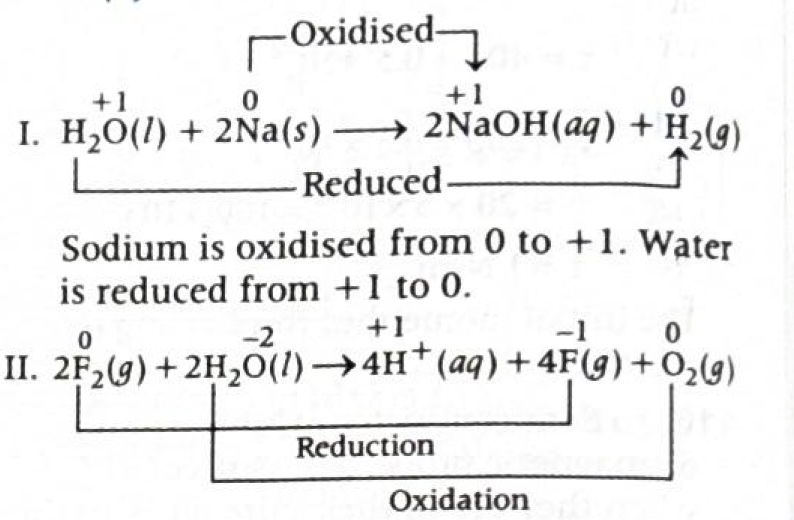
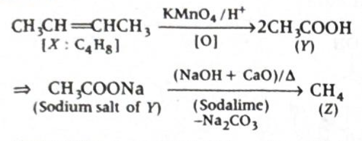
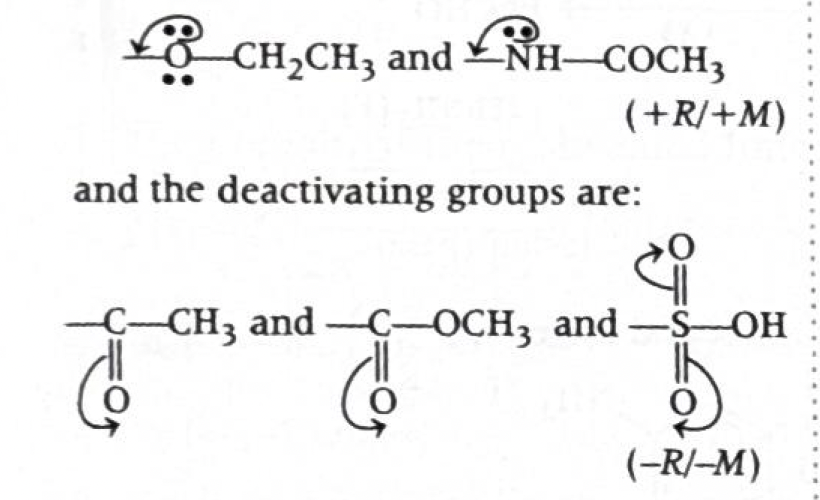
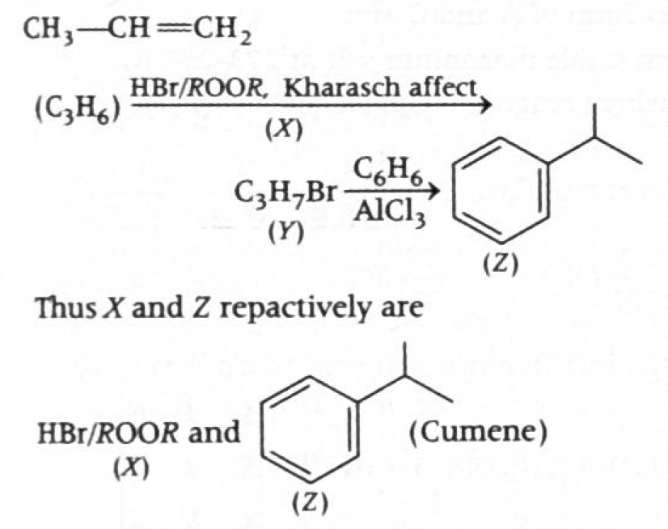
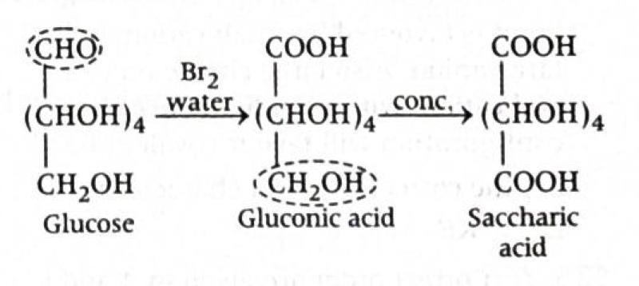
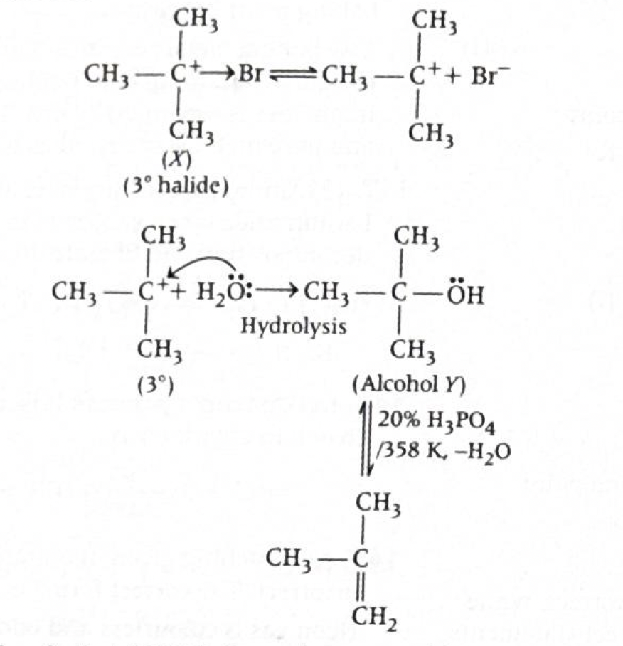
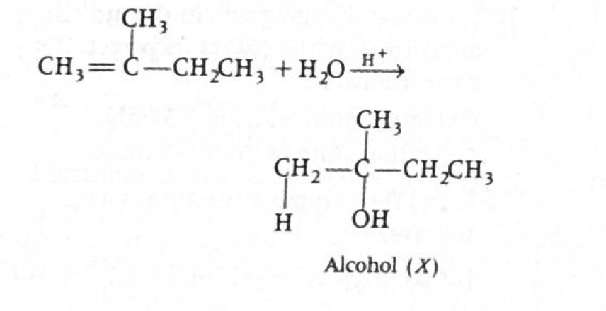
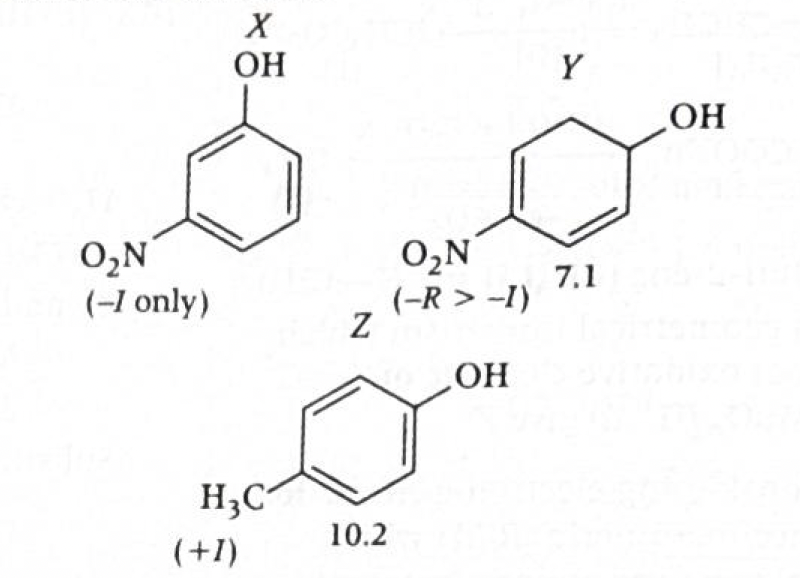
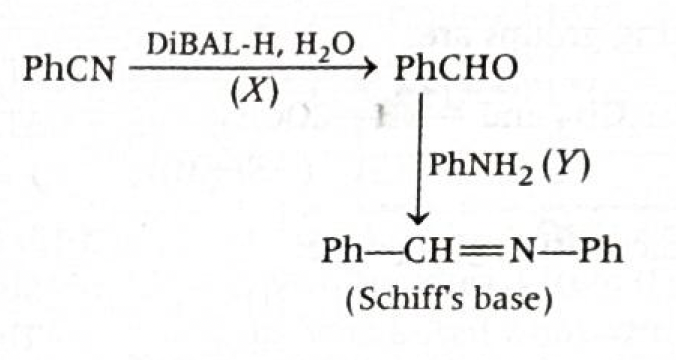
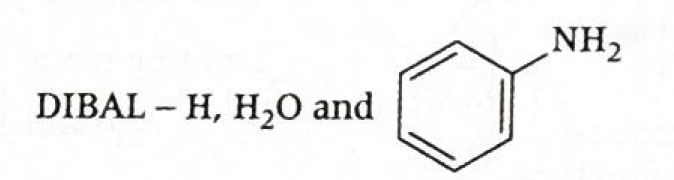

Answer: \((b)\ \mathrm{Li}^{2+}(n=3),\ \mathrm{Be}^{3+}(n=4)\)
Solution:
-
Use Bohr's energy formula for hydrogen-like species
For one-electron species such as \(\mathrm{H}\), \(\mathrm{He}^+\), \(\mathrm{Li}^{2+}\), \(\mathrm{Be}^{3+}\), the energy of the electron in the \(n^{\text{th}}\) orbit is:
\[ E_n = -13.6\frac{Z^2}{n^2}\ \text{eV} \]
Here, \(Z\) is the atomic number and \(n\) is the principal quantum number.
So, two species will have the same energy if \(\dfrac{Z^2}{n^2}\) is the same for both.
-
Check the options
-
(a) \(\mathrm{H}(n=1)\) and
\(\mathrm{Li}^{2+}(n=1)\)
For \(\mathrm{H}\): \(Z=1,\ n=1\)
\[ E = -13.6\frac{1^2}{1^2} = -13.6\ \text{eV} \]
For \(\mathrm{Li}^{2+}\): \(Z=3,\ n=1\)
\[ E = -13.6\frac{3^2}{1^2} = -122.4\ \text{eV} \]
Not same.
-
(b) \(\mathrm{Li}^{2+}(n=3)\) and
\(\mathrm{Be}^{3+}(n=4)\)
For \(\mathrm{Li}^{2+}\): \(Z=3,\ n=3\)
\[ E = -13.6\frac{3^2}{3^2} = -13.6\ \text{eV} \]
For \(\mathrm{Be}^{3+}\): \(Z=4,\ n=4\)
\[ E = -13.6\frac{4^2}{4^2} = -13.6\ \text{eV} \]
Both have same energy.
-
(c) \(\mathrm{He}^+(n=1)\) and
\(\mathrm{Li}^{2+}(n=3)\)
For \(\mathrm{He}^+\): \(Z=2,\ n=1\)
\[ E = -13.6\frac{2^2}{1^2} = -54.4\ \text{eV} \]
For \(\mathrm{Li}^{2+}\): \(Z=3,\ n=3\)
\[ E = -13.6\frac{3^2}{3^2} = -13.6\ \text{eV} \]
Not same.
-
(d) \(\mathrm{H}(n=3)\) and
\(\mathrm{Li}^{2+}(n=3)\)
For \(\mathrm{H}\): \(Z=1,\ n=3\)
\[ E = -13.6\frac{1^2}{3^2} = -\frac{13.6}{9}\ \text{eV} \]
For \(\mathrm{Li}^{2+}\): \(Z=3,\ n=3\)
\[ E = -13.6\frac{3^2}{3^2} = -13.6\ \text{eV} \]
Not same.
-
(a) \(\mathrm{H}(n=1)\) and
\(\mathrm{Li}^{2+}(n=1)\)
-
Hence
\[ \boxed{(b)\ \mathrm{Li}^{2+}(n=3),\ \mathrm{Be}^{3+}(n=4)} \]
Core theory you should know:
- Hydrogen-like species are atoms/ions having only one electron.
- Examples: \( \mathrm{H}, \mathrm{He^+}, \mathrm{Li^{2+}}, \mathrm{Be^{3+}} \).
- In this question, all given species are hydrogen-like, so Bohr's energy formula can be applied to all of them.
- \( n \) is the principal quantum number, i.e. the shell/energy level in which the electron is present.
- Thus, \( \mathrm{Be^{3+}}(n=4) \) means the only electron of \( \mathrm{Be^{3+}} \) is present in the 4th energy level.
- For any hydrogen-like species, energy is given by: \[ E = -13.6 \frac{Z^2}{n^2}\ \text{eV} \]
- Here, \( Z \) = atomic number and \( n \) = principal quantum number.
- Two species have the same energy when \( \dfrac{Z^2}{n^2} \) is the same for both.
- Bohr model applies to hydrogen-like species, that is, species having only one electron.
- Examples: \(\mathrm{H},\ \mathrm{He}^+,\ \mathrm{Li}^{2+},\ \mathrm{Be}^{3+}\)
-
Energy depends on both \(Z\) and \(n\):
\[ E_n \propto -\frac{Z^2}{n^2} \]
- More the value of \(\dfrac{Z^2}{n^2}\), more negative is the energy, so the electron is more tightly bound.
- If two species have equal \(\dfrac{Z^2}{n^2}\), they have equal energy.
JEE / NCERT takeaway:
-
For hydrogen atom:
\[ E_n = -\frac{13.6}{n^2}\ \text{eV} \]
-
For hydrogen-like species:
\[ E_n = -13.6\frac{Z^2}{n^2}\ \text{eV} \]
-
Radius formula:
\[ r_n = a_0\frac{n^2}{Z} \]
-
Velocity varies as:
\[ v_n \propto \frac{Z}{n} \]
- Energy, radius, and velocity questions for one-electron species are very common in JEE/EAPCET.
Fast 1-minute solving trick:
- Do not calculate full energy every time first.
-
Just compare:
\[ \frac{Z^2}{n^2} \]
-
In option (b):
\[ \frac{3^2}{3^2}=1,\qquad \frac{4^2}{4^2}=1 \]
So energies are immediately same.
-
Even faster:
if \(Z=n\), then \(\dfrac{Z^2}{n^2}=1\), so energy becomes \(-13.6\ \text{eV}\).
Both \(\mathrm{Li}^{2+}(n=3)\) and \(\mathrm{Be}^{3+}(n=4)\) follow this.
Common mistakes to avoid:
- Forgetting that the formula is valid only for one-electron species.
- Comparing only \(n\) values and ignoring \(Z\).
- Forgetting the square in \(\dfrac{Z^2}{n^2}\).
- Assuming same orbit number means same energy for different ions.
Intuitive memory aid:
- In hydrogen-like atoms, energy is controlled by the ratio \(Z/n\).
-
Since
\[ E_n \propto -\left(\frac{Z}{n}\right)^2 \]
equal \(\dfrac{Z}{n}\) means equal energy. -
For option (b):
\[ \frac{3}{3}=1,\qquad \frac{4}{4}=1 \]
so same energy.
Chapter / Topic / Subtopic:
- Chapter: Structure of Atom
- Topic: Bohr model of hydrogen atom
- Subtopic: Energy of electron in hydrogen-like species
Final exam-style answer:
For hydrogen-like species,
\[ E_n = -13.6\frac{Z^2}{n^2}\ \text{eV} \]
For \(\mathrm{Li}^{2+}(n=3)\):
\[ E = -13.6\frac{3^2}{3^2} = -13.6\ \text{eV} \]
For \(\mathrm{Be}^{3+}(n=4)\):
\[ E = -13.6\frac{4^2}{4^2} = -13.6\ \text{eV} \]
Therefore, both have the same energy.
\(\boxed{(b)\ \mathrm{Li}^{2+}(n=3),\ \mathrm{Be}^{3+}(n=4)}\)
Quick cheatsheet:
-
Energy of hydrogen-like species:
\[ E_n = -13.6\frac{Z^2}{n^2}\ \text{eV} \]
-
Equal energy condition:
\[ \frac{Z_1^2}{n_1^2}=\frac{Z_2^2}{n_2^2} \]
-
Equivalent simpler check:
\[ \frac{Z_1}{n_1}=\frac{Z_2}{n_2} \]
-
Radius formula:
\[ r_n = a_0\frac{n^2}{Z} \]
- Hydrogen-like species: \(\mathrm{H},\ \mathrm{He}^+,\ \mathrm{Li}^{2+},\ \mathrm{Be}^{3+}\)
-
Shortcut: if \(Z=n\), then
\[ E_n = -13.6\ \text{eV} \]
Answer: \((b)\ \dfrac{100}{21R}\)
Solution:
-
Use the Rydberg formula for hydrogen spectrum
The wavelength of a spectral line in hydrogen atom is given by:
\(\dfrac{1}{\lambda}=R\left(\dfrac{1}{n_f^2}-\dfrac{1}{n_i^2}\right)\)
where:
- \(R\) = Rydberg constant
- \(n_f\) = final orbit
- \(n_i\) = initial orbit
-
Identify the Balmer series condition
In the Balmer series, all transitions end at:
\(n_f = 2\)
The Balmer lines are:
- First Balmer line: \(n_i = 3 \to n_f = 2\)
- Second Balmer line: \(n_i = 4 \to n_f = 2\)
- Third Balmer line: \(n_i = 5 \to n_f = 2\)
Here the required line corresponds to the third line of Balmer series, so:
\(n_i = 5,\quad n_f = 2\)
-
Substitute into the formula
\(\dfrac{1}{\lambda}=R\left(\dfrac{1}{2^2}-\dfrac{1}{5^2}\right)\)
\(\dfrac{1}{\lambda}=R\left(\dfrac{1}{4}-\dfrac{1}{25}\right)\)
\(\dfrac{1}{\lambda}=R\left(\dfrac{25-4}{100}\right)\)
\(\dfrac{1}{\lambda}=\dfrac{21R}{100}\)
Therefore:
\(\lambda=\dfrac{100}{21R}\)
Therefore:
\(\boxed{(b)\ \dfrac{100}{21R}}\)
Why this method works:
- Hydrogen spectrum consists of series of lines produced when the electron falls from a higher energy level to a lower energy level.
- Each series has a fixed final orbit.
-
For Balmer series, the final orbit is always:
\(n_f=2\)
- Once \(n_f\) and \(n_i\) are known, the wavelength is obtained directly from Rydberg equation.
JEE / NCERT takeaway:
-
General spectral formula for hydrogen:
\(\dfrac{1}{\lambda}=R\left(\dfrac{1}{n_1^2}-\dfrac{1}{n_2^2}\right)\)
with \(n_2>n_1\)
-
Lyman series:
\(n_f=1\)
Ultraviolet region
-
Balmer series:
\(n_f=2\)
Visible region
-
Paschen series:
\(n_f=3\)
Infrared region
-
Brackett series:
\(n_f=4\)
-
Pfund series:
\(n_f=5\)
- In hydrogen spectrum questions, the most important step is identifying the correct series and hence the correct final orbit.
1-minute solving trick:
-
First remember:
\(\text{Balmer} \Rightarrow n_f=2\)
-
Then remember the line numbering:
- 1st line \(\Rightarrow n_i=3\)
- 2nd line \(\Rightarrow n_i=4\)
- 3rd line \(\Rightarrow n_i=5\)
-
So for third Balmer line, directly write:
\(\dfrac{1}{\lambda}=R\left(\dfrac{1}{4}-\dfrac{1}{25}\right)\)
-
Use quick fraction subtraction:
\(\dfrac{1}{4}-\dfrac{1}{25}=\dfrac{25-4}{100}=\dfrac{21}{100}\)
-
Hence immediately:
\(\lambda=\dfrac{100}{21R}\)
Common mistakes to avoid:
- Taking Balmer series as \(n_f=1\) instead of \(n_f=2\).
- Taking third Balmer line as \(n_i=4\) instead of \(n_i=5\).
- Writing the Rydberg formula in reverse order and getting a negative value.
- Forgetting that line number starts from the transition just above the final orbit.
Series map to remember:
-
Lyman : \(n_i = 2,3,4,\dots \to n_f=1\)
-
Balmer : \(n_i = 3,4,5,\dots \to n_f=2\)
-
Paschen : \(n_i = 4,5,6,\dots \to n_f=3\)
Chapter / Topic / Subtopic:
- Chapter: Structure of Atom
- Topic: Hydrogen spectrum and Bohr model
- Subtopic: Rydberg equation and Balmer series
Final exam-style answer:
For Balmer series, \(n_f=2\).
For the third Balmer line, \(n_i=5\).
Using Rydberg equation:
\(\dfrac{1}{\lambda}=R\left(\dfrac{1}{2^2}-\dfrac{1}{5^2}\right)\)
\(\dfrac{1}{\lambda}=R\left(\dfrac{1}{4}-\dfrac{1}{25}\right)\)
\(\dfrac{1}{\lambda}=R\left(\dfrac{21}{100}\right)\)
Hence:
\(\lambda=\dfrac{100}{21R}\)
\(\boxed{(b)\ \dfrac{100}{21R}}\)
Quick cheatsheet:
-
Rydberg formula:
\(\dfrac{1}{\lambda}=R\left(\dfrac{1}{n_f^2}-\dfrac{1}{n_i^2}\right)\)
-
Lyman series:
\(n_f=1\)
-
Balmer series:
\(n_f=2\)
-
Paschen series:
\(n_f=3\)
-
Third Balmer line:
\(5 \to 2\)
-
Useful pattern:
\(\text{\(m^{\text{th}}\) line of a series} \Rightarrow n_i=n_f+m\)
-
For Balmer series:
\(\text{\(m^{\text{th}}\) line} \Rightarrow n_i=2+m\)
Answer: \((b)\ \mathrm{P},\ \mathrm{Ca}\)
Solution:
-
Find the electronic configuration of each element
For phosphorus, \(\mathrm{P}\) \((Z=15)\):
\(1s^2\,2s^2\,2p^6\,3s^2\,3p^3\)
For calcium, \(\mathrm{Ca}\) \((Z=20)\):
\(1s^2\,2s^2\,2p^6\,3s^2\,3p^6\,4s^2\)
For magnesium, \(\mathrm{Mg}\) \((Z=12)\):
\(1s^2\,2s^2\,2p^6\,3s^2\)
For oxygen, \(\mathrm{O}\) \((Z=8)\):
\(1s^2\,2s^2\,2p^4\)
For sulphur, \(\mathrm{S}\) \((Z=16)\):
\(1s^2\,2s^2\,2p^6\,3s^2\,3p^4\)
-
Count total number of \(s\)-electrons and
\(p\)-electrons
-
\(\mathrm{P}\):
\(s\text{-electrons} = 1s^2 + 2s^2 + 3s^2 = 6\)
\(p\text{-electrons} = 2p^6 + 3p^3 = 9\)
\(s:p = 6:9 = 2:3\)
-
\(\mathrm{Ca}\):
\(s\text{-electrons} = 1s^2 + 2s^2 + 3s^2 + 4s^2 = 8\)
\(p\text{-electrons} = 2p^6 + 3p^6 = 12\)
\(s:p = 8:12 = 2:3\)
-
\(\mathrm{Mg}\):
\(s\text{-electrons} = 1s^2 + 2s^2 + 3s^2 = 6\)
\(p\text{-electrons} = 2p^6 = 6\)
\(s:p = 6:6 = 1:1\)
-
\(\mathrm{O}\):
\(s\text{-electrons} = 1s^2 + 2s^2 = 4\)
\(p\text{-electrons} = 2p^4 = 4\)
\(s:p = 4:4 = 1:1\)
-
\(\mathrm{S}\):
\(s\text{-electrons} = 1s^2 + 2s^2 + 3s^2 = 6\)
\(p\text{-electrons} = 2p^6 + 3p^4 = 10\)
\(s:p = 6:10 = 3:5\)
-
\(\mathrm{P}\):
-
Compare the ratios
Both \(\mathrm{P}\) and \(\mathrm{Ca}\) have:
\(s:p = 2:3\)
Therefore:
\(\boxed{(b)\ \mathrm{P},\ \mathrm{Ca}}\)
Why this method works:
- The question asks for the ratio of total \(s\)-electrons to total \(p\)-electrons in the whole electronic configuration.
- So we must count all occupied \(s\)-subshell electrons and all occupied \(p\)-subshell electrons.
- After counting, reduce the ratio to simplest form.
JEE / NCERT takeaway:
-
Electronic configuration is written using Aufbau principle:
\(1s,\ 2s,\ 2p,\ 3s,\ 3p,\ 4s,\dots\)
-
Maximum electrons in subshells:
- \(s\)-subshell can hold \(2\) electrons
- \(p\)-subshell can hold \(6\) electrons
- \(d\)-subshell can hold \(10\) electrons
- \(f\)-subshell can hold \(14\) electrons
- For many objective questions, you do not need orbital diagrams; correct electronic configuration is enough.
- Counting-type questions from electronic configuration are very common in Structure of Atom and Classification/Periodic Table basics.
1-minute solving trick:
- First test the options instead of checking all elements deeply.
-
\(\mathrm{P}\): \(1s^2\,2s^2\,2p^6\,3s^2\,3p^3\)
\(s=6,\ p=9 \Rightarrow 2:3\)
- Now only check the partner in the option containing \(\mathrm{P}\).
-
\(\mathrm{Ca}\): \(1s^2\,2s^2\,2p^6\,3s^2\,3p^6\,4s^2\)
\(s=8,\ p=12 \Rightarrow 2:3\)
- So option \((b)\) is obtained very quickly.
More intuitive shortcut:
-
For \(\mathrm{P}\):
all \(s\)-shells up to \(3s\) are full \(\Rightarrow 6\ s\)-electrons
\(2p^6 + 3p^3 = 9\ p\)-electrons
-
For \(\mathrm{Ca}\):
four filled \(s\)-subshells \(\Rightarrow 8\ s\)-electrons
two filled \(p\)-subshells \(\Rightarrow 12\ p\)-electrons
-
Both simplify to:
\(6:9 = 8:12 = 2:3\)
Common mistakes to avoid:
- Counting only valence electrons instead of total electrons in all occupied \(s\)- and \(p\)-subshells.
- Forgetting \(2p^6\) while counting \(p\)-electrons.
- Taking \(\mathrm{Ca}\) as having \(p^0\) just because outermost shell is \(4s^2\).
- Not reducing the ratio to simplest form.
Chapter / Topic / Subtopic:
- Chapter: Structure of Atom
- Topic: Electronic configuration of atoms
- Subtopic: Counting \(s\)- and \(p\)-electrons from electronic configuration
Final exam-style answer:
Electronic configuration of \(\mathrm{P}\):
\(1s^2\,2s^2\,2p^6\,3s^2\,3p^3\)
\(s\text{-electrons} = 6,\quad p\text{-electrons} = 9\)
\(s:p = 6:9 = 2:3\)
Electronic configuration of \(\mathrm{Ca}\):
\(1s^2\,2s^2\,2p^6\,3s^2\,3p^6\,4s^2\)
\(s\text{-electrons} = 8,\quad p\text{-electrons} = 12\)
\(s:p = 8:12 = 2:3\)
Hence, the required pair is:
\(\boxed{(b)\ \mathrm{P},\ \mathrm{Ca}}\)
Quick cheatsheet:
-
\(s\)-subshell maximum electrons:
\(2\)
-
\(p\)-subshell maximum electrons:
\(6\)
-
\(\mathrm{P}\):
\(1s^2\,2s^2\,2p^6\,3s^2\,3p^3\)
\(s=6,\ p=9\)
-
\(\mathrm{Ca}\):
\(1s^2\,2s^2\,2p^6\,3s^2\,3p^6\,4s^2\)
\(s=8,\ p=12\)
-
Target ratio:
\(2:3\)
-
Answer pair:
\(\mathrm{P},\ \mathrm{Ca}\)
Answer: \((c)\ \mathrm{Oxygen}\)
Solution:
We have to find the element with the least electron gain enthalpy.
Electron gain enthalpy generally becomes more negative across a period and less negative down a group.
But there is an important exception here: adding an electron to the compact \(2p\)-orbital of oxygen causes greater electron-electron repulsion than adding an electron to the larger \(3p\)-orbital of sulphur.
-
Meaning of electron gain enthalpy
Electron gain enthalpy is the enthalpy change when an isolated gaseous atom accepts an electron:
\(\mathrm{X(g) + e^- \rightarrow X^-(g)}\)
If energy is released, the value is negative. More negative value means greater tendency to accept an electron.
-
General periodic trend
- Across a period, electron gain enthalpy usually becomes more negative.
- Down a group, it usually becomes less negative.
So among halogens, chlorine has very high tendency to gain an electron, while iodine has lower tendency than chlorine.
-
Special comparison: oxygen vs sulphur
Oxygen is in group 16 and has configuration:
\(\mathrm{O: 1s^2\,2s^2\,2p^4}\)
Sulphur has configuration:
\(\mathrm{S: [Ne]\,3s^2\,3p^4}\)
When an extra electron is added to oxygen, it enters the small and compact \(2p\)-subshell. Because this orbital is very small, electron-electron repulsion is high.
In sulphur, the incoming electron enters the larger \(3p\)-subshell, where repulsion is less.
Therefore, adding an electron to oxygen is less favourable than expected. So oxygen has a less negative electron gain enthalpy than sulphur.
-
Compare the given options
- Chlorine: very high electron affinity, so electron gain enthalpy is highly negative.
- Iodine: less negative than chlorine, but still more negative than oxygen.
- Oxygen: least favourable here because of strong repulsion in compact \(2p\)-orbital.
- Sulphur: more negative than oxygen because electron enters larger \(3p\)-orbital.
-
Hence
The least electron gain enthalpy among the given options is \(\mathrm{Oxygen}\).
\(\boxed{(c)\ \mathrm{Oxygen}}\)
Why this exception happens:
- Smaller orbitals hold electrons in a more crowded region of space.
- So when an extra electron enters oxygen's \(2p\)-orbital, repulsion is large.
- In sulphur, the \(3p\)-orbital is bigger, so the incoming electron experiences less repulsion.
-
That is why:
\(\mathrm{\Delta_{eg}H(S) < \Delta_{eg}H(O)}\)
meaning sulphur has more negative electron gain enthalpy than oxygen.
JEE / NCERT takeaway:
- Electron gain enthalpy usually becomes more negative from left to right in a period.
- Electron gain enthalpy usually becomes less negative down a group.
- Important exception: \(\mathrm{S}\) has more negative electron gain enthalpy than \(\mathrm{O}\).
- Similarly, \(\mathrm{Cl}\) has more negative electron gain enthalpy than \(\mathrm{F}\) because the very small size of fluorine causes greater repulsion in compact orbitals.
- So the simple trend is useful, but orbital size and interelectronic repulsion must also be checked.
Useful order to remember:
-
Among halogens:
\(\mathrm{Cl > F > Br > I}\) in tendency to gain electron
-
In group 16 anomaly:
\(\mathrm{S > O}\) in electron accepting tendency
1-minute solving trick:
- First notice that chlorine and iodine are halogens, so both generally have quite negative electron gain enthalpy.
- Then compare oxygen and sulphur carefully.
-
Remember the standard exception:
\(\mathrm{O}\) has less negative electron gain enthalpy than \(\mathrm{S}\)
- So among all four, oxygen is the least.
Very intuitive shortcut:
- Think of oxygen as a small crowded room and sulphur as a bigger room.
- Adding one more electron into oxygen's compact \(2p\)-region causes more crowding.
- So oxygen resists the incoming electron more than sulphur.
Common mistakes to avoid:
- Blindly applying only the periodic trend and choosing iodine.
- Forgetting the anomaly that oxygen has less negative electron gain enthalpy than sulphur.
- Confusing least electron gain enthalpy with most negative electron gain enthalpy.
- Mixing electron gain enthalpy with electronegativity or ionization enthalpy.
Quick orbital picture:
-
Oxygen: small 2p orbital → more repulsion → less favourable electron gain Sulphur: larger 3p orbital → less repulsion → more favourable electron gain
Chapter / Topic / Subtopic:
- Chapter: Classification of Elements and Periodicity in Properties
- Topic: Periodic trends
- Subtopic: Electron gain enthalpy and its exceptions
Final exam-style answer:
Electron gain enthalpy generally becomes more negative across a period and less negative down a group. However, in oxygen the added electron enters the compact \(2p\)-orbital, where electron-electron repulsion is high. In sulphur, the electron enters the larger \(3p\)-orbital, so repulsion is less.
Therefore oxygen has less negative electron gain enthalpy than sulphur. Hence, among the given options, the least electron gain enthalpy is:
\(\boxed{(c)\ \mathrm{Oxygen}}\)
Answer: \((b)\ \mathrm{LiF < KF}\)
Solution:
This statement is not correct. The correct order is:
\(\mathrm{LiF > KF}\) in covalent character.
-
Use Fajans’ rule
According to Fajans’ rule, covalent character increases when:
- the cation is smaller
- the cation has higher positive charge
- the anion is larger
- the cation has pseudo noble gas configuration, which increases polarising power
Main idea: a small highly charged cation can distort the electron cloud of the anion more strongly. This distortion is called polarisation. Greater polarisation means greater covalent character.
-
Check each option
(a) \(\mathrm{KF < KI}\)
Here cation is same: \(\mathrm{K^+}\). Compare anions: \(\mathrm{F^-}\) is smaller, \(\mathrm{I^-}\) is much larger. Larger anion is more easily polarised, so covalent character increases from \(\mathrm{KF}\) to \(\mathrm{KI}\).
So, \(\mathrm{KF < KI}\) is correct.
(b) \(\mathrm{LiF < KF}\)
Here anion is same: \(\mathrm{F^-}\). Compare cations: \(\mathrm{Li^+}\) is much smaller than \(\mathrm{K^+}\). Smaller cation has greater polarising power.
Therefore \(\mathrm{LiF}\) has more covalent character than \(\mathrm{KF}\).
So the correct order is: \(\mathrm{LiF > KF}\)
Hence given statement \(\mathrm{LiF < KF}\) is wrong.
(c) \(\mathrm{SnCl_2 < SnCl_4}\)
\(\mathrm{Sn^{4+}}\) has higher charge than \(\mathrm{Sn^{2+}}\), so its polarising power is higher. Therefore \(\mathrm{SnCl_4}\) has more covalent character than \(\mathrm{SnCl_2}\).
So this is correct.
(d) \(\mathrm{NaCl < CuCl}\)
\(\mathrm{Cu^+}\) has greater polarising power than \(\mathrm{Na^+}\), and transition metal cations often show more covalent character. Also cations with pseudo noble gas configuration tend to increase covalent character.
So \(\mathrm{CuCl}\) is more covalent than \(\mathrm{NaCl}\). This is correct.
-
Hence the incorrect statement is
\(\boxed{(b)\ \mathrm{LiF < KF}}\)
Core theory you should remember:
- Fajans’ rule: ionic compounds show covalent character when the cation polarises the anion.
-
Polarising power of cation increases when:
cation size decreases and cation charge increases.
-
Polarizability of anion increases when:
anion size increases.
-
So, in general:
small cation + large anion \(\Rightarrow\) more covalent character
- Cations with \(18\)-electron or pseudo noble gas configuration often produce more covalent compounds than cations with normal noble gas configuration.
Very quick comparison rules for exams:
-
Same cation: larger anion \(\Rightarrow\) more
covalent
Example: \(\mathrm{KF < KCl < KBr < KI}\)
-
Same anion: smaller cation \(\Rightarrow\) more
covalent
Example: \(\mathrm{CsF < RbF < KF < NaF < LiF}\)
-
Same metal, different oxidation state: higher
oxidation state \(\Rightarrow\) more covalent
Example: \(\mathrm{SnCl_4 > SnCl_2}\), \(\mathrm{FeCl_3 > FeCl_2}\)
1-minute solving trick:
- Scan for the option where only the cation changes or only the anion changes.
-
In \(\mathrm{LiF}\) vs \(\mathrm{KF}\), anion is same. So just
compare cation size:
\(\mathrm{Li^+}\) is smaller than \(\mathrm{K^+}\)
-
Smaller cation means stronger polarisation, so:
\(\mathrm{LiF > KF}\) in covalent character
- Therefore option \((b)\) is immediately the wrong statement.
Common mistakes to avoid:
- Thinking that all alkali metal halides are purely ionic to the same extent.
- Forgetting that smaller cation means more covalent character, not less.
- Mixing up polarising power of cation with polarizability of anion.
- Ignoring the effect of higher positive charge, as in \(\mathrm{SnCl_4}\) vs \(\mathrm{SnCl_2}\).
Intuitive picture:
-
A small cation pulls the anion’s electron cloud more strongly:
Small cation + large anion → strong distortion → more covalent character -
So:
\(\mathrm{Li^+}\) distorts \(\mathrm{F^-}\) more than \(\mathrm{K^+}\) does ⇒ \(\mathrm{LiF}\) is more covalent than \(\mathrm{KF}\)
Chapter / Topic / Subtopic:
- Chapter: Chemical Bonding and Molecular Structure
- Topic: Ionic bond and covalent character
- Subtopic: Fajans’ rule and polarisation
Final exam-style answer:
According to Fajans’ rule, covalent character increases with small cation, large anion, and higher charge on cation.
Since \(\mathrm{Li^+}\) is smaller than \(\mathrm{K^+}\), it has greater polarising power. Therefore:
\(\mathrm{LiF > KF}\) in covalent character.
Hence the statement \(\mathrm{LiF < KF}\) is incorrect.
\(\boxed{(b)}\)
Answer: \((c)\ \mathrm{A\ and\ C\ only}\)
Solution:
We must check whether each given order matches the stated property correctly.
-
Pair A: \(\mathrm{NO_2 > O_3 > H_2O}\) for bond angle
Now compare the bond angles:
- \(\mathrm{NO_2}\) has bond angle about \(134^\circ\)
- \(\mathrm{O_3}\) has bond angle about \(117^\circ\)
- \(\mathrm{H_2O}\) has bond angle about \(104.5^\circ\)
So the correct order is:
\(\mathrm{NO_2 > O_3 > H_2O}\)
Hence, A is correct.
- Exact bond angles need not be memorized: solve by using shape and lone-pair compression.
- Rule: more lone pairs on the central atom \(\Rightarrow\) greater repulsion \(\Rightarrow\) smaller bond angle.
- \(NO_2\): bent, but least compressed among the three, so it has the largest bond angle.
- \(O_3\): bent with 1 lone pair on the central atom, so its bond angle is smaller than \(NO_2\).
- \(H_2O\): bent with 2 lone pairs on the central atom, so it has the smallest bond angle due to maximum compression.
- Therefore, the correct order is: \(NO_2 > O_3 > H_2O\).
-
Pair B: \(\mathrm{HF > H_2O > NH_3}\) for dipole
moment
Actual dipole moments are approximately:
- \(\mathrm{H_2O} \approx 1.85\ \mathrm{D}\)
- \(\mathrm{HF} \approx 1.82\ \mathrm{D}\)
- \(\mathrm{NH_3} \approx 1.47\ \mathrm{D}\)
So the correct order is:
\(\mathrm{H_2O > HF > NH_3}\)
Therefore, the given order in B is incorrect.
-
A useful idea here is that dipole moment depends on both:
\(\text{bond polarity} + \text{molecular shape}\)
- Even though \(\mathrm{HF}\) is highly polar, water has a bent structure, so the two \(\mathrm{O-H}\) bond moments add up to give a slightly larger net dipole moment.
-
H2O (bent) H \ O / H (net dipole is toward O; bond dipoles add strongly)
-
Pair C: \(\mathrm{I_2 > F_2 > N_2}\) for bond length
Bond length depends mainly on:
- size of atoms
- bond order
\(\mathrm{I_2}\) has very large atoms, so bond length is maximum. \(\mathrm{F_2}\) has smaller atoms, so shorter bond length than \(\mathrm{I_2}\). \(\mathrm{N_2}\) has a triple bond, so its bond length is very small.
Thus the correct order is:
\(\mathrm{I_2 > F_2 > N_2}\)
Hence, C is correct.
-
Final conclusion
A is correct, B is incorrect, and C is correct.
Therefore, the correctly matched pairs are:
\(\boxed{(c)\ \mathrm{A\ and\ C\ only}}\)
Why each result is true:
- Bond angle: lone pair-bond pair and lone pair-lone pair repulsions affect shape and angle.
- Dipole moment: depends on both electronegativity difference and vector addition of bond moments.
- Bond length: increases with atomic size and decreases with increasing bond order.
JEE / NCERT takeaway:
-
For bond angle:
\(\mathrm{NO_2 > O_3 > H_2O}\)
-
For dipole moment:
\(\mathrm{H_2O > HF > NH_3}\)
-
For bond length:
\(\mathrm{I_2 > F_2 > N_2}\)
- Dipole moment is a vector quantity, so shape matters.
-
Bond length is inversely related to bond order:
\(\text{single bond} > \text{double bond} > \text{triple bond}\)
1-minute solving trick:
-
First look at B, because it is the easiest to reject if you
remember:
\(\mathrm{H_2O > HF > NH_3}\) in dipole moment
-
A is a standard bond angle order:
\(\mathrm{NO_2 > O_3 > H_2O}\)
-
C is also straightforward:
larger atom \(\Rightarrow\) larger bond length, and triple bond \(\Rightarrow\) shortest bond
- So only A and C remain correct.
Common mistakes to avoid:
- Thinking \(\mathrm{HF}\) must have the highest dipole moment only because fluorine is the most electronegative.
- Forgetting that molecular geometry affects net dipole moment.
- Ignoring bond order while comparing bond lengths, especially for \(\mathrm{N_2}\).
- Confusing bent molecules like \(\mathrm{O_3}\) and \(\mathrm{H_2O}\) while comparing bond angles.
Chapter / Topic / Subtopic:
- Chapter: Chemical Bonding and Molecular Structure
- Topic: Molecular shape and bond parameters
- Subtopic: Bond angle, dipole moment, and bond length comparison
Quick memory sheet:
-
Bond angle:
\(\mathrm{NO_2 > O_3 > H_2O}\)
-
Dipole moment:
\(\mathrm{H_2O > HF > NH_3}\)
-
Bond length:
\(\mathrm{I_2 > F_2 > N_2}\)
-
Rule:
\(\text{Higher bond order} \Rightarrow \text{shorter bond length}\)
-
Rule:
\(\mu\) depends on both bond polarity and molecular geometry
Final exam-style answer:
In A, the bond angle order is correct: \(\mathrm{NO_2 > O_3 > H_2O}\).
In B, the dipole moment order is incorrect. The correct order is: \(\mathrm{H_2O > HF > NH_3}\).
In C, the bond length order is correct: \(\mathrm{I_2 > F_2 > N_2}\).
Therefore, the correctly matched pairs are: \(\boxed{(c)\ \mathrm{A\ and\ C\ only}}\)
Answer: \((b)\ \dfrac{7}{10}\)
Solution:
-
Identify the physical condition
The vessel is open, so pressure remains equal to atmospheric pressure.
Also, the vessel itself is fixed, so volume remains constant.
Thus for the gas inside the vessel:
\(p = \text{constant}, \quad V = \text{constant}\)
-
Use the ideal gas equation
For an ideal gas:
\(pV = nRT\)
Since \(p\) and \(V\) are constant for this open rigid vessel, we get:
\(nT = \text{constant}\)
So:
\(n \propto \dfrac{1}{T}\)
-
Convert temperature into Kelvin
\(T_1 = 27^\circ\text{C} = 300\ \text{K}\)
\(T_2 = 727^\circ\text{C} = 1000\ \text{K}\)
-
Find fraction of air remaining
Using \( \dfrac{n_1}{n_2} = \dfrac{T_2}{T_1} \),
\(n_2 = n_1 \dfrac{T_1}{T_2}\)
Therefore:
\(\dfrac{n_2}{n_1} = \dfrac{300}{1000} = \dfrac{3}{10}\)
This means \(\dfrac{3}{10}\) of the original air remains inside the vessel after heating.
-
Match with the required option
The quantity expelled is:
\(1 - \dfrac{3}{10} = \dfrac{7}{10}\)
Hence the marked option is:
\(\boxed{(b)\ \dfrac{7}{10}}\)
But physically, note carefully:
- Air remaining in the vessel \(= \dfrac{3}{10}\)
- Air expelled out of the vessel \(= \dfrac{7}{10}\)
So the wording and the option-key pattern do not perfectly agree. From the calculation, the fraction remaining is clearly \(\dfrac{3}{10}\).
Why this works:
- In an open vessel, pressure cannot build up much above atmospheric pressure, so it stays effectively constant.
- Because the vessel is rigid, its volume does not change.
- Therefore, from \(pV=nRT\), if \(p\) and \(V\) are constant, then \(nT\) must remain constant.
- So when temperature increases, the number of moles inside must decrease, and some gas escapes.
JEE / NCERT takeaway:
-
Ideal gas equation:
\(pV = nRT\)
-
For constant pressure and constant volume:
\(\dfrac{n_1}{n_2} = \dfrac{T_2}{T_1}\)
- Always convert Celsius to Kelvin before using gas-law formulas.
- For open-container heating problems, pressure is usually taken as atmospheric and hence constant.
- If the container is rigid, volume is also constant.
1-minute solving trick:
- See open vessel \(\Rightarrow p = \text{constant}\)
- See vessel with no expansion mentioned \(\Rightarrow V = \text{constant}\)
-
So directly use:
\(n \propto \dfrac{1}{T}\)
-
Then:
\(\text{fraction remaining} = \dfrac{300}{1000} = \dfrac{3}{10}\)
-
If the examiner is asking for expelled fraction, subtract from
1:
\(1 - \dfrac{3}{10} = \dfrac{7}{10}\)
Common mistakes to avoid:
- Using Celsius directly instead of Kelvin.
- Forgetting that in an open vessel, pressure is taken as constant.
- Confusing fraction remaining with fraction expelled.
- Writing \(n \propto T\) instead of \(n \propto \dfrac{1}{T}\) when \(p\) and \(V\) are constant.
Chapter / Topic / Subtopic:
- Chapter: States of Matter
- Topic: Ideal Gas Equation
- Subtopic: Open rigid vessel problems with change in temperature
Final exam-style answer:
For the gas in the open rigid vessel, \(p\) and \(V\) remain constant.
Using:
\(pV = nRT\)
we get:
\(n \propto \dfrac{1}{T}\)
\(T_1 = 27^\circ\text{C} = 300\ \text{K}\)
\(T_2 = 727^\circ\text{C} = 1000\ \text{K}\)
Hence:
\(\dfrac{n_2}{n_1} = \dfrac{T_1}{T_2} = \dfrac{300}{1000} = \dfrac{3}{10}\)
So the fraction of air remaining in the vessel is:
\(\boxed{\dfrac{3}{10}}\)
Therefore the fraction of air expelled is:
\(\boxed{\dfrac{7}{10}}\)
Quick concept sheet:
-
Ideal gas law:
\(pV = nRT\)
-
If \(p,V\) constant:
\(nT = \text{constant}\)
-
Hence:
\(n \propto \dfrac{1}{T}\)
-
Kelvin conversion:
\(T(\text{K}) = t(^\circ\text{C}) + 273\)
-
Here:
\(27^\circ\text{C} = 300\ \text{K}, \quad 727^\circ\text{C} = 1000\ \text{K}\)
-
Fraction remaining:
\(\dfrac{300}{1000} = \dfrac{3}{10}\)
-
Fraction expelled:
\(1-\dfrac{3}{10}=\dfrac{7}{10}\)
Answer: \((d)\ 3\)
Solution:
-
Use the definition of equivalent weight
Equivalent weight of an element is the mass of that element which combines with or displaces \(8\ \text{g}\) of oxygen.
-
Write the given data
- Mass of element \(= 12\ \text{g}\)
- Mass of oxygen \(= 32\ \text{g}\)
If \(12\ \text{g}\) of the element combines with \(32\ \text{g}\) of oxygen, then the mass of the element that would combine with \(8\ \text{g}\) of oxygen is its equivalent weight.
-
Apply direct proportion
\(32\ \text{g}\) of oxygen combines with \(12\ \text{g}\) of element.
\(8\ \text{g}\) of oxygen combines with:
\(\dfrac{12}{32}\times 8 = 3\ \text{g}\)
Therefore, the equivalent weight of the element is:
\(\boxed{3}\)
-
Equivalent method using number of equivalents
Number of equivalents of element \(=\) number of equivalents of oxygen
\(\dfrac{\text{Weight of element}}{\text{Equivalent weight of element}} = \dfrac{\text{Weight of oxygen}}{\text{Equivalent weight of oxygen}}\)
\(\dfrac{12}{E} = \dfrac{32}{8}\)
\(\dfrac{12}{E} = 4\)
\(E = \dfrac{12}{4} = 3\)
Therefore:
\(\boxed{(d)\ 3}\)
Why this method works:
- Equivalent weight is based on a fixed standard: \(8\ \text{g}\) of oxygen.
- So whenever mass of an element reacting with oxygen is given, convert it to the amount that would react with \(8\ \text{g}\) oxygen.
- This is why a simple ratio works directly.
JEE / NCERT takeaway:
- Equivalent weight of an element: mass that combines with \(1\ \text{g}\) of hydrogen, \(8\ \text{g}\) of oxygen, or \(35.5\ \text{g}\) of chlorine.
- Equivalent weight of oxygen: \(\dfrac{16}{2} = 8\)
-
General relation:
\(\text{Number of equivalents} = \dfrac{\text{given mass}}{\text{equivalent weight}}\)
-
In combination problems:
\(\text{equivalents of one substance} = \text{equivalents of the other}\)
1-minute solving trick:
- Remember only one line:
- \(32\ \text{g}\) oxygen combines with \(12\ \text{g}\) element
-
So \(8\ \text{g}\) oxygen combines with:
\(\dfrac{12}{32}\times 8\)
-
That gives:
\(3\)
- So directly mark \((d)\).
Common mistakes to avoid:
- Using \(16\) instead of \(8\) for oxygen in equivalent weight problems.
- Confusing equivalent weight with atomic mass or molar mass.
- Inverting the ratio by mistake.
- Forgetting that equivalent weight is the mass combining with \(8\ \text{g}\) oxygen, not \(32\ \text{g}\) oxygen.
Chapter / Topic / Subtopic:
- Chapter: Some Basic Concepts of Chemistry
- Topic: Equivalent weight and equivalents
- Subtopic: Equivalent weight from mass combination with oxygen
Final exam-style answer:
Equivalent weight of an element is the mass that combines with \(8\ \text{g}\) of oxygen.
Given, \(12\ \text{g}\) of element combines with \(32\ \text{g}\) of oxygen.
Therefore, mass of element combining with \(8\ \text{g}\) oxygen is:
\(\dfrac{12}{32}\times 8 = 3\ \text{g}\)
Hence, the equivalent weight of the element is:
\(\boxed{3}\)
Quick cheatsheet:
-
Equivalent weight of element:
Mass that combines with \(8\ \text{g}\) oxygen
-
Equivalent weight of oxygen:
\(8\)
-
Number of equivalents:
\(\dfrac{\text{mass}}{\text{equivalent weight}}\)
-
At reaction point:
\(\text{equivalents of A} = \text{equivalents of B}\)
-
Fast formula here:
\(\text{Equivalent weight of element} = \dfrac{\text{mass of element}}{\text{mass of oxygen}}\times 8\)
-
So:
\(= \dfrac{12}{32}\times 8 = 3\)
Answer: \((c)\ -92.4\ \text{kJ}\)
Solution:
Given:
\(\Delta_f H^\Theta\) of ammonia \(= -46.2\ \text{kJ mol}^{-1}\)
Reaction:
\(N_2(g) + 3H_2(g) \longrightarrow 2NH_3(g)\)
-
Understand what standard enthalpy of formation means
Standard enthalpy of formation is the enthalpy change when one mole of a compound is formed from its constituent elements in their standard states.
So for ammonia:
\(\frac{1}{2}N_2(g) + \frac{3}{2}H_2(g) \longrightarrow NH_3(g)\)
\(\Delta_f H^\Theta = -46.2\ \text{kJ mol}^{-1}\)
-
Compare the given reaction with the formation
reaction
The given reaction forms two moles of ammonia:
\(N_2(g) + 3H_2(g) \longrightarrow 2NH_3(g)\)
Since enthalpy is an extensive property, if the amount of substance doubles, enthalpy change also doubles.
-
Calculate the reaction enthalpy
\(\Delta_r H^\Theta = 2 \times \Delta_f H^\Theta\)
\(\Delta_r H^\Theta = 2 \times (-46.2)\)
\(\Delta_r H^\Theta = -92.4\ \text{kJ}\)
Therefore:
\(\boxed{(c)\ -92.4\ \text{kJ}}\)
Why this method works:
- \(\Delta_f H^\Theta\) is always written for formation of one mole of the compound.
- In the given reaction, two moles of \(\mathrm{NH_3}\) are formed.
- So the enthalpy change becomes twice the standard enthalpy of formation of ammonia.
- Because the value is negative, the reaction is exothermic.
JEE / NCERT takeaway:
-
Standard enthalpy of formation:
Enthalpy change when \(1\) mole of a compound is formed from its elements in standard states.
-
Elements in standard state have zero standard enthalpy of
formation:
\(\Delta_f H^\Theta\big(N_2(g)\big)=0,\quad \Delta_f H^\Theta\big(H_2(g)\big)=0\)
-
General formula:
\(\Delta_r H^\Theta = \sum n\,\Delta_f H^\Theta(\text{products}) - \sum n\,\Delta_f H^\Theta(\text{reactants})\)
-
For this reaction:
\(\Delta_r H^\Theta = 2\,\Delta_f H^\Theta(NH_3) - \left[\Delta_f H^\Theta(N_2)+3\Delta_f H^\Theta(H_2)\right]\)
-
Since \(\Delta_f H^\Theta\) of \(N_2(g)\) and \(H_2(g)\) is
zero:
\(\Delta_r H^\Theta = 2(-46.2)-0 = -92.4\ \text{kJ}\)
1-minute solving trick:
- See the phrase enthalpy of formation of ammonia \(\Rightarrow\) value is for 1 mole of \(NH_3\).
- The reaction produces 2 moles of \(NH_3\).
-
So directly do:
\(2 \times (-46.2) = -92.4\ \text{kJ}\)
- No long method is needed here.
Common mistakes to avoid:
- Using \(-46.2\ \text{kJ}\) directly without noticing that the reaction forms 2 moles of ammonia.
- Forgetting that \(N_2(g)\) and \(H_2(g)\) are elements in standard state, so their \(\Delta_f H^\Theta\) is zero.
- Changing the sign incorrectly and writing \(+92.4\ \text{kJ}\).
- Confusing \(\Delta_f H^\Theta\) with \(\Delta_r H^\Theta\).
Chapter / Topic / Subtopic:
- Chapter: Thermodynamics
- Topic: Enthalpy changes
- Subtopic: Standard enthalpy of formation and reaction enthalpy
Final exam-style answer:
Standard enthalpy of formation of ammonia is for formation of \(1\) mole of \(NH_3\):
\(\frac{1}{2}N_2(g)+\frac{3}{2}H_2(g)\longrightarrow NH_3(g)\)
\(\Delta_f H^\Theta = -46.2\ \text{kJ mol}^{-1}\)
In the given reaction, \(2\) moles of ammonia are formed:
\(N_2(g)+3H_2(g)\longrightarrow 2NH_3(g)\)
Therefore:
\(\Delta_r H^\Theta = 2\times (-46.2)= -92.4\ \text{kJ}\)
\(\boxed{(c)\ -92.4\ \text{kJ}}\)
Quick cheatsheet:
-
Formation enthalpy:
Value for formation of \(1\) mole of compound
-
Reaction enthalpy formula:
\(\Delta_r H^\Theta = \sum n\Delta_f H^\Theta(\text{products}) - \sum n\Delta_f H^\Theta(\text{reactants})\)
-
For elements in standard state:
\(\Delta_f H^\Theta = 0\)
-
Here:
\(\Delta_r H^\Theta = 2(-46.2) = -92.4\ \text{kJ}\)
- Key idea: enthalpy is an extensive property, so it changes with stoichiometric coefficient.
Answer: \((a)\ 1.6\ \text{mol L}^{-1}\)
Solution:
Given reaction:
\(AO_2(g) + BO_2(g) \rightleftharpoons AO_3(g) + BO(g)\)
Given:
- \(K_c = 16\)
- Initial concentration of each species in \(1\text{ L}\) flask \(= 1\ \text{mol L}^{-1}\)
-
Write initial concentrations
Since \(1\) mole of each substance is taken in a \(1\text{ L}\) flask:
- \([AO_2]_0 = 1\)
- \([BO_2]_0 = 1\)
- \([AO_3]_0 = 1\)
- \([BO]_0 = 1\)
-
Decide the direction of shift
Initially, reaction quotient is:
\(Q_c = \dfrac{[AO_3][BO]}{[AO_2][BO_2]} = \dfrac{1 \times 1}{1 \times 1} = 1\)
Since \(Q_c < K_c\) i.e. \(1 < 16\), the reaction shifts in the forward direction.
So reactants decrease and products increase.
-
Set up equilibrium concentrations
Let the forward change be \(x\).
- \([AO_2] = 1 - x\)
- \([BO_2] = 1 - x\)
- \([AO_3] = 1 + x\)
- \([BO] = 1 + x\)
-

-
Apply the equilibrium expression
For the reaction,
\(K_c = \dfrac{[AO_3][BO]}{[AO_2][BO_2]}\)
Substituting equilibrium values:
\(16 = \dfrac{(1+x)(1+x)}{(1-x)(1-x)}\)
\(16 = \left(\dfrac{1+x}{1-x}\right)^2\)
Taking square root on both sides:
\(4 = \dfrac{1+x}{1-x}\)
-
Solve for \(x\)
\(4(1-x) = 1+x\)
\(4 - 4x = 1 + x\)
\(3 = 5x\)
\(x = \dfrac{3}{5} = 0.6\)
-
Find equilibrium concentration of \(BO\)
\([BO] = 1 + x = 1 + 0.6 = 1.6\ \text{mol L}^{-1}\)
Therefore:
\(\boxed{(a)\ 1.6\ \text{mol L}^{-1}}\)
Why this method works:
- Equilibrium problems are solved by writing initial, change, and equilibrium concentrations.
- Since all coefficients are \(1:1:1:1\), the change in each concentration is numerically the same.
- \(K_c\) compares product concentration to reactant concentration at equilibrium.
- Because \(K_c = 16\) is much greater than \(1\), equilibrium favors products.
JEE / NCERT takeaway:
-
Reaction quotient:
\(Q_c = \dfrac{\text{product terms}}{\text{reactant terms}}\)
-
Compare \(Q_c\) with \(K_c\):
- If \(Q_c < K_c\), forward reaction occurs
- If \(Q_c > K_c\), backward reaction occurs
- If \(Q_c = K_c\), system is already at equilibrium
-
Equilibrium constant in terms of concentration:
\(K_c = \dfrac{[C]^c[D]^d}{[A]^a[B]^b}\)
- Pure solids and pure liquids are not written in \(K_c\), but all gases and solutes are included.
- Stoichiometric coefficients become powers in the equilibrium expression.
1-minute solving trick:
-
Since initially all concentrations are \(1\), directly check:
\(Q_c = 1\)
- But \(K_c = 16\), so products must increase.
-
Use:
\([BO] = [AO_3] = 1+x,\quad [AO_2] = [BO_2] = 1-x\)
-
Then:
\(16 = \dfrac{(1+x)^2}{(1-x)^2}\)
-
Take square root immediately:
\(4 = \dfrac{1+x}{1-x}\)
- This gives \(x=0.6\), so \([BO]=1.6\).
Common mistakes to avoid:
- Not checking the direction of shift before writing \(1\pm x\).
- Using \(1-x\) for products even though \(K_c>1\) and products should increase.
- Forgetting to square terms in the numerator and denominator here after substitution.
- Forgetting that in a \(1\text{ L}\) flask, \(1\) mole means \(1\ \text{mol L}^{-1}\).
Chapter / Topic / Subtopic:
- Chapter: Chemical Equilibrium
- Topic: Equilibrium constant \(K_c\)
- Subtopic: ICE table based equilibrium concentration calculation
Final exam-style answer:
Initially, each concentration is \(1\ \text{mol L}^{-1}\).
Let forward reaction proceed by \(x\).
Then at equilibrium:
\([AO_2]=1-x,\ [BO_2]=1-x,\ [AO_3]=1+x,\ [BO]=1+x\)
Now,
\(K_c=\dfrac{[AO_3][BO]}{[AO_2][BO_2]}\)
\(16=\dfrac{(1+x)^2}{(1-x)^2}\)
\(4=\dfrac{1+x}{1-x}\)
\(4-4x=1+x\)
\(3=5x\)
\(x=\dfrac{3}{5}=0.6\)
Hence,
\([BO]=1+x=1.6\ \text{mol L}^{-1}\)
\(\boxed{(a)\ 1.6\ \text{mol L}^{-1}}\)
Quick cheatsheet:
-
Equilibrium expression:
\(K_c = \dfrac{\text{products}}{\text{reactants}}\)
-
Direction test:
\(Q_c < K_c \Rightarrow\) forward shift
-
ICE table idea:
Initial \(\rightarrow\) Change \(\rightarrow\) Equilibrium
-
For this question:
\(16=\dfrac{(1+x)^2}{(1-x)^2}\)
-
After square root:
\(4=\dfrac{1+x}{1-x}\)
-
Result:
\(x=0.6,\quad [BO]=1.6\ \text{mol L}^{-1}\)
Answer: \((c)\)
Solution:
We must identify whether water is oxidised or reduced in each reaction.
-
Reaction I
\(H_2O(l) + 2Na(s) \longrightarrow 2NaOH(aq) + H_2(g)\)
Here, sodium changes as:
\(Na: 0 \longrightarrow +1\)
So sodium is oxidised.
Now look at hydrogen of water:
In \(H_2O\), hydrogen has oxidation number \(+1\).
In \(H_2(g)\), hydrogen has oxidation number \(0\).
So hydrogen goes from \(+1\) to \(0\), which means reduction.
Therefore, in reaction I, water is reduced.
-
Reaction II
\(2H_2O(l) + 2F_2(g) \longrightarrow 4H^+(aq) + 4F^-(aq) + O_2(g)\)
Here, fluorine changes as:
\(F_2: 0 \longrightarrow -1\)
So fluorine is reduced.
Now look at oxygen of water:
In \(H_2O\), oxygen has oxidation number \(-2\).
In \(O_2(g)\), oxygen has oxidation number \(0\).
So oxygen goes from \(-2\) to \(0\), which means oxidation.
Therefore, in reaction II, water is oxidised.
-
Match the correct statement
So:
- In reaction I, water is reduced.
- In reaction II, water is oxidised.
Hence the correct option is:
\(\boxed{(c)}\)
-

Therefore:
\(\boxed{(c)\text{ In reaction I water is reduced and in reaction II water is oxidised.}}\)
Why this method works:
- Oxidation means increase in oxidation number.
- Reduction means decrease in oxidation number.
- In redox questions, the fastest method is to track the oxidation number of the atom from the given substance.
-
Since the question asks specifically about
water, check which atom from water is changing:
- In reaction I, hydrogen from water forms \(H_2\).
- In reaction II, oxygen from water forms \(O_2\).
JEE / NCERT takeaway:
-
Oxidation:
Increase in oxidation number
-
Reduction:
Decrease in oxidation number
-
Element in free state:
Oxidation number \(= 0\)
-
In water:
\(H = +1,\quad O = -2\)
-
In \(H_2\):
\(H = 0\)
-
In \(O_2\):
\(O = 0\)
-
In \(F_2\):
\(F = 0\)
-
In \(F^-\):
\(F = -1\)
- Water can behave as either an oxidising agent or a reducing agent depending on the reacting species.
1-minute solving trick:
- Do not inspect the whole reaction in detail first.
- Just ask: which part of water is appearing in the products?
-
Reaction I: water gives \(H_2\)
\(H: +1 \to 0\)
So water is reduced.
-
Reaction II: water gives \(O_2\)
\(O: -2 \to 0\)
So water is oxidised.
- That directly gives option \((c)\).
Common mistakes to avoid:
- Looking only at sodium or fluorine and forgetting that the question asks about water.
- Assuming water always behaves in only one way in redox reactions.
-
Tracking the wrong atom in water:
- In reaction I, follow hydrogen.
- In reaction II, follow oxygen.
- Confusing oxidation of an atom with oxidation of the whole species participating in electron transfer.
Chapter / Topic / Subtopic:
- Chapter: Redox Reactions
- Topic: Oxidation number method
- Subtopic: Identifying oxidation and reduction of water in redox reactions
Final exam-style answer:
In reaction I,
\(H_2O(l) + 2Na(s) \longrightarrow 2NaOH(aq) + H_2(g)\)
hydrogen in water changes from \(+1\) in \(H_2O\) to \(0\) in \(H_2\), so water is reduced.
In reaction II,
\(2H_2O(l) + 2F_2(g) \longrightarrow 4H^+(aq) + 4F^-(aq) + O_2(g)\)
oxygen in water changes from \(-2\) in \(H_2O\) to \(0\) in \(O_2\), so water is oxidised.
Hence, the correct statement is:
\(\boxed{(c)\text{ In reaction I water is reduced and in reaction II water is oxidised.}}\)
Quick cheatsheet:
-
Oxidation:
increase in oxidation number
-
Reduction:
decrease in oxidation number
-
Water oxidation numbers:
\(H=+1,\ O=-2\)
-
Reaction I key change:
\(H \text{ in } H_2O: +1 \to 0\)
\(\Rightarrow\) water reduced
-
Reaction II key change:
\(O \text{ in } H_2O: -2 \to 0\)
\(\Rightarrow\) water oxidised
-
Correct option:
\((c)\)
Answer: \((d)\ KO_2 < RbO_2 < CsO_2\)
Solution:
We are asked for the stability order of superoxides of potassium, rubidium and caesium.
-
Identify the species involved
\(KO_2,\ RbO_2,\ CsO_2\) are all superoxides.
They contain the superoxide ion:
\(O_2^{-}\)
-
Use the stability trend of alkali metal superoxides
For alkali metals, the stability of larger oxygen anions increases with increasing size of the metal cation.
Among oxide \((O^{2-})\), peroxide \((O_2^{2-})\), and superoxide \((O_2^-)\), the superoxide ion is relatively large.
So it is better stabilized by larger alkali metal cations.
-
Compare the cation sizes
Down Group 1, cation size increases as:
\(K^+ < Rb^+ < Cs^+\)
Therefore, the ability to stabilize the large \(O_2^{-}\) ion also increases in the same order.
-
Write the stability order
Hence, stability of superoxides increases as:
\(KO_2 < RbO_2 < CsO_2\)
Therefore:
\(\boxed{(d)\ KO_2 < RbO_2 < CsO_2}\)
Why this method works:
- Large anions are more stable with large cations because size compatibility is better.
- The superoxide ion \(O_2^{-}\) is larger than oxide ion \(O^{2-}\).
- Down the alkali metal group, cation size and electropositivity increase.
- So heavier alkali metals stabilize superoxides more effectively.
JEE / NCERT takeaway:
-
Alkali metals form different oxides with oxygen:
- Lithium mainly forms oxide: \(Li_2O\)
- Sodium mainly forms peroxide: \(Na_2O_2\)
- Potassium, rubidium and caesium readily form superoxides: \(KO_2,\ RbO_2,\ CsO_2\)
- The trend is governed mainly by size of the metal cation.
- Larger cations stabilize larger anions better.
-
Thus:
\(O^{2-}\) is favored by smaller cations, while \(O_2^{-}\) is favored by larger cations.
1-minute solving trick:
- Remember one rule:
- Down the alkali metal group, superoxide stability increases.
- So directly:
- Hence:
- That gives option \((d)\).
\(K < Rb < Cs\)
\(KO_2 < RbO_2 < CsO_2\)
Common mistakes to avoid:
- Thinking smaller cations always stabilize compounds more. Here the key is stabilization of a large anion.
- Mixing up oxide, peroxide and superoxide trends.
- Forgetting that \(K,\ Rb,\ Cs\) are the alkali metals that commonly form superoxides.
- Reversing the order by using reactivity trend instead of anion-size stabilization.
Chapter / Topic / Subtopic:
- Chapter: s-Block Elements
- Topic: Oxides of alkali metals
- Subtopic: Stability of superoxides
Final exam-style answer:
Superoxides contain the large anion \(O_2^{-}\).
The stability of superoxides increases with increase in size and electropositivity of the alkali metal.
Since:
\(K^+ < Rb^+ < Cs^+\)
therefore, the stability order is:
\(KO_2 < RbO_2 < CsO_2\)
\(\boxed{(d)\ KO_2 < RbO_2 < CsO_2}\)
Quick cheatsheet:
- Oxide ion: \(O^{2-}\)
- Peroxide ion: \(O_2^{2-}\)
- Superoxide ion: \(O_2^{-}\)
- Key idea: larger cation stabilizes larger anion better
-
Group 1 size trend:
\(Li^+ < Na^+ < K^+ < Rb^+ < Cs^+\)
-
Superoxide stability trend:
\(KO_2 < RbO_2 < CsO_2\)
-
Remember:
\(Li \rightarrow\) oxide, \(Na \rightarrow\) peroxide, \(K/Rb/Cs \rightarrow\) superoxide
Answer: \((d)\) \((A)\) is not correct but \((R)\) is correct.
Solution:
We must examine the truth of both the Assertion and the Reason.
-
Check the Assertion \((A)\)
Assertion says:
\(MgO,\ CaO,\ SrO,\ BaO\) are insoluble in water.
This statement is not correct as a general statement.
- \(CaO,\ SrO,\ BaO\) are basic oxides that react with water to form their hydroxides.
-
So in water they do not simply remain as “insoluble oxides”;
they form:
\(MO + H_2O \longrightarrow M(OH)_2\)
-
Examples:
\(CaO + H_2O \longrightarrow Ca(OH)_2\)
\(BaO + H_2O \longrightarrow Ba(OH)_2\)
Hence the assertion is taken as false.
-
Check the Reason \((R)\)
Reason says that in aqueous medium the basic strength of \(MgO,\ CaO,\ SrO,\ BaO\) increases with increase in atomic number of metal.
This is correct.
Down Group 2, ionic character increases and the metal-oxygen bond becomes more ionic, so the oxides become more strongly basic:
\(MgO < CaO < SrO < BaO\)
-
Why basic strength increases down the group
- Down the group, size of metal ion increases.
- Polarising power decreases.
- \(M\!-\!O\) bond becomes more ionic.
- More ionic oxide means oxide ion character is expressed more strongly, so basic nature increases.
-
Final decision
So:
- Assertion \((A)\) is not correct.
- Reason \((R)\) is correct.
Therefore, the correct option is:
\(\boxed{(d)}\)
Therefore:
\(\boxed{(d)\text{ (A) is not correct but (R) is correct.}}\)
Why this method works:
- This is an assertion-reason question, so each statement must be checked separately.
- For Group 2 oxides, do not think only in terms of “soluble/insoluble”; also think about their reaction with water.
-
The trend in basic character is a standard Group 2 trend:
\(MgO < CaO < SrO < BaO\)
- So even if the first statement sounds partly familiar, the second must still be judged independently.
JEE / NCERT takeaway:
- Group 2 oxides are basic in nature.
-
Basic strength increases down the group:
\(MgO < CaO < SrO < BaO\)
- This happens because oxides become more ionic down the group.
- Hydroxides of Group 2 also become more basic and more soluble down the group.
-
Quick linked trend:
\(Mg(OH)_2 < Ca(OH)_2 < Sr(OH)_2 < Ba(OH)_2\)
-
Oxides such as \(CaO\) and \(BaO\) react with water to give
hydroxides:
\(MO + H_2O \longrightarrow M(OH)_2\)
1-minute solving trick:
-
In Group 2, remember two down-the-group trends:
basicity increases and hydroxide solubility increases
- So if a statement says all these oxides are simply “insoluble in water,” be careful.
-
The reason statement is definitely true:
\(MgO < CaO < SrO < BaO\)
-
Hence the fastest choice is:
\((d)\)
Common mistakes to avoid:
- Confusing oxide with hydroxide.
- Thinking “insoluble in water” and “does not react with water” mean the same thing.
- Forgetting that Group 2 oxides become more ionic and more basic down the group.
- Treating assertion-reason questions as single-statement MCQs.
Chapter / Topic / Subtopic:
- Chapter: s-Block Elements
- Topic: Alkaline earth metals
- Subtopic: Basic nature and water behaviour of Group 2 oxides
Final exam-style answer:
The statement that \(MgO,\ CaO,\ SrO,\ BaO\) are insoluble in water is not correct as a general statement, because alkaline earth metal oxides such as \(CaO,\ SrO,\ BaO\) react with water to form hydroxides.
Also, in aqueous medium the basic strength of Group 2 oxides increases down the group:
\(MgO < CaO < SrO < BaO\)
Hence, Assertion is false but Reason is true.
\(\boxed{(d)}\)
Quick cheatsheet:
-
Group 2 oxide basicity:
\(MgO < CaO < SrO < BaO\)
- Reason: ionic character increases down the group
-
Water reaction:
\(MO + H_2O \longrightarrow M(OH)_2\)
-
Group 2 hydroxide solubility:
\(Mg(OH)_2 < Ca(OH)_2 < Sr(OH)_2 < Ba(OH)_2\)
-
Correct option:
\((d)\)
Answer: \((c)\ Tl\)
Solution:
The question asks which element has \(+1\) oxidation state more stable than \(+3\).
-
Identify the key concept
This is based on the inert pair effect.
In heavier p-block elements, the valence \(ns^2\) electrons tend to remain less willing to participate in bonding.
Because of this, the oxidation state obtained after losing only the \(np\) electron(s) becomes more stable than the higher oxidation state.
-
Apply the idea to Group 13 elements
Group 13 elements usually show oxidation state \(+3\).
But down the group, due to inert pair effect, the \(+1\) state becomes increasingly stable.
The trend is:
\(B < Al < Ga < In < Tl\)
So the inert pair effect is strongest in \(Tl\).
-
Why thallium shows stable \(+1\) state
Thallium has outer configuration:
\([Xe]\,4f^{14}5d^{10}6s^2 6p^1\)
In \(Tl^{+}\), only the \(6p^1\) electron is lost, while the \(6s^2\) pair remains untouched.
That \(6s^2\) pair behaves like an inert pair, making \(+1\) more stable than \(+3\).
-
Eliminate the other options
- \(Ga\): mainly shows \(+3\); \(+1\) is much less stable.
- \(Sn\): belongs to Group 14, common states are \(+2\) and \(+4\), not \(+1\) and \(+3\).
- \(Ge\): also belongs to Group 14, common states are \(+2\) and \(+4\).
- \(Tl\): shows \(+1\) more stable than \(+3\).
Therefore:
\(\boxed{(c)\ Tl}\)
Why this method works:
- Heavier p-block elements show poor shielding by inner \(d\) and \(f\) electrons.
- Because of poor shielding, the outer \(ns^2\) electrons are held more strongly by the nucleus.
- So those \(s\)-electrons are less easily removed.
- This is called the inert pair effect.
- Hence lower oxidation states become more stable down the group.
JEE / NCERT takeaway:
- Inert pair effect: tendency of valence \(ns^2\) electrons to remain non-bonding in heavier p-block elements.
- Cause: poor shielding by \(d\) and \(f\) electrons.
-
Group 13 trend:
\(+1\) oxidation state becomes more stable down the group.
- So among Group 13 elements, \(Tl(+1)\) is especially stable.
- Group 14 trend: lower oxidation state \(+2\) becomes more stable down the group, for example \(Pb^{2+}\) is more stable than \(Pb^{4+}\).
1-minute solving trick:
- See oxidation states \(+1\) and \(+3\) \(\Rightarrow\) immediately think Group 13 + inert pair effect.
- Among the options, only \(Tl\) is the classic case where \(+1\) is more stable than \(+3\).
- \(Sn\) and \(Ge\) belong to Group 14, so they are distractors.
- So mark \((c)\) quickly.
Common mistakes to avoid:
- Choosing \(Sn\) because inert pair effect also exists there. For \(Sn\), the relevant comparison is \(+2\) vs \(+4\), not \(+1\) vs \(+3\).
- Forgetting that this question is specifically about Group 13-type oxidation states.
- Confusing inert pair effect with simple metallic character trend.
- Thinking \(Ga\) shows \(+1\) more stable than \(+3\); it does not.
Chapter / Topic / Subtopic:
- Chapter: p-Block Elements
- Topic: Oxidation states
- Subtopic: Inert pair effect in heavier p-block elements
Final exam-style answer:
Due to the inert pair effect, the valence \(ns^2\) electrons in heavier p-block elements tend to remain non-bonding.
In thallium, the \(6s^2\) pair remains inert, so \(Tl^{+}\) is more stable than \(Tl^{3+}\).
Hence, the element for which \(+1\) oxidation state is more stable than \(+3\) oxidation state is:
\(\boxed{(c)\ Tl}\)
Quick cheatsheet:
-
Inert pair effect:
valence \(ns^2\) electrons resist participation in bonding
-
Cause:
poor shielding by \(d\) and \(f\) electrons
-
Group 13 lower oxidation state trend:
\(+1\) becomes more stable down the group
-
Most important example:
\(Tl^{+}\) is more stable than \(Tl^{3+}\)
-
Group 14 reminder:
\(+2\) becomes more stable than \(+4\) down the group
-
Correct option:
\((c)\ Tl\)
Answer: \((a)\ 3\)
Solution:
We must identify which oxides in the list are acidic oxides.
Given oxides:
\(CO,\ B_2O_3,\ SiO_2,\ CO_2,\ Al_2O_3,\ PbO_2,\ Tl_2O_3\)
-
Recall the basic classification of oxides
- Acidic oxides react with bases to form salt and water.
- Basic oxides react with acids.
- Amphoteric oxides react with both acids and bases.
- Neutral oxides show neither acidic nor basic behavior in the usual sense.
-
Classify each oxide one by one
-
\(CO\): neutral oxide
It is neither acidic nor basic.
-
\(B_2O_3\): acidic oxide
It reacts with base:
\(B_2O_3 + 2NaOH \longrightarrow 2NaBO_2 + H_2O\)
-
\(SiO_2\): acidic oxide
It reacts with base:
\(SiO_2 + 2NaOH \longrightarrow Na_2SiO_3 + H_2O\)
-
\(CO_2\): acidic oxide
It reacts with base:
\(CO_2 + 2NaOH \longrightarrow Na_2CO_3 + H_2O\)
- \(Al_2O_3\): amphoteric oxide
- \(PbO_2\): amphoteric oxide
- \(Tl_2O_3\): basic oxide
-
\(CO\): neutral oxide
-
Count the acidic oxides
The acidic oxides are:
- \(B_2O_3\)
- \(SiO_2\)
- \(CO_2\)
So, total number of acidic oxides \(= 3\).
Therefore:
\(\boxed{(a)\ 3}\)
Why this method works:
- Oxides of non-metals are usually acidic.
- Oxides of metals are usually basic.
- Some oxides like \(Al_2O_3\) and \(PbO_2\) are amphoteric, so they must not be counted as purely acidic.
- \(CO\) is a standard example of a neutral oxide.
JEE / NCERT takeaway:
- Acidic oxides: usually oxides of non-metals in higher oxidation states.
- Basic oxides: usually oxides of metals.
- Amphoteric oxides: react with both acids and bases.
- Neutral oxides: \(CO,\ NO,\ N_2O\) are standard examples.
-
Important examples:
- Acidic: \(CO_2,\ SO_2,\ SO_3,\ SiO_2,\ B_2O_3\)
- Amphoteric: \(Al_2O_3,\ ZnO,\ PbO,\ PbO_2,\ SnO,\ SnO_2\)
- Neutral: \(CO,\ NO,\ N_2O\)
1-minute solving trick:
-
Directly mark the clearly acidic non-metal oxides:
\(B_2O_3,\ SiO_2,\ CO_2\)
-
Reject:
- \(CO\) as neutral
- \(Al_2O_3\) and \(PbO_2\) as amphoteric
- \(Tl_2O_3\) as basic
- So answer becomes \(3\) immediately.
Common mistakes to avoid:
- Counting \(CO\) as acidic just because it is a non-metal oxide.
- Counting \(Al_2O_3\) as acidic; it is amphoteric.
- Counting \(PbO_2\) as acidic; it is amphoteric.
- Using only metal/non-metal rule without remembering exceptions like neutral and amphoteric oxides.
Chapter / Topic / Subtopic:
- Chapter: Classification of Elements and Periodicity / p-Block and General Inorganic Trends
- Topic: Acidic, basic, amphoteric and neutral oxides
- Subtopic: Classification of oxides by chemical nature
Final exam-style answer:
Among the given oxides, \(B_2O_3,\ SiO_2\) and \(CO_2\) are acidic oxides.
\(CO\) is neutral, \(Al_2O_3\) and \(PbO_2\) are amphoteric, and \(Tl_2O_3\) is basic.
Hence, the number of acidic oxides is:
\(\boxed{3}\)
Quick cheatsheet:
-
Acidic oxides:
\(B_2O_3,\ SiO_2,\ CO_2\)
-
Neutral oxide:
\(CO\)
-
Amphoteric oxides:
\(Al_2O_3,\ PbO_2\)
-
Basic oxide:
\(Tl_2O_3\)
-
Total acidic oxides:
\(3\)
Answer: \((d)\ O_3,\ NO,\ \mathrm{PAN}\)
Solution:
Photochemical smog is formed when nitrogen oxides and hydrocarbons react in the presence of sunlight. It contains several secondary pollutants, of which the most common are ozone and PAN.
-
Recall what photochemical smog is
Photochemical smog is a reducing-smog type? No — it is actually an oxidising smog.
It is usually produced in urban areas where sunlight acts on:
- \(NO_x\) \((NO,\ NO_2)\)
- unburnt hydrocarbons
This leads to formation of secondary pollutants like:
- \(O_3\) (ozone)
- \(\mathrm{PAN}\) (peroxyacetyl nitrate)
- aldehydes
-
Check the options
- (a) \(O_3,\ CH_4,\ CO_2\): incorrect, because \(CH_4\) and \(CO_2\) are not the standard common components listed for photochemical smog.
- (b) \(O_3,\ CO_2,\ CO\): incorrect, because \(CO_2\) and \(CO\) are not the characteristic common components of photochemical smog.
- (c) \(O_2,\ SO_3,\ \mathrm{PAN}\): incorrect, because \(SO_3\) is more associated with classical smog, not photochemical smog.
- (d) \(O_3,\ NO,\ \mathrm{PAN}\): correct, because ozone and PAN are major components, and nitrogen oxides participate in the formation of photochemical smog.
-
Identify the correct answer
Therefore, the common components of photochemical smog are:
\(O_3,\ NO,\ \mathrm{PAN}\)
-

Therefore:
\(\boxed{(d)\ O_3,\ NO,\ \mathrm{PAN}}\)
Why this method works:
- Photochemical smog is identified by its oxidising pollutants, especially \(O_3\) and \(\mathrm{PAN}\).
- It forms in the presence of sunlight, so nitrogen oxides and hydrocarbons undergo photochemical reactions.
-
The most exam-relevant clue is:
\(O_3\) + \(\mathrm{PAN}\) \(\Rightarrow\) think photochemical smog.
JEE / NCERT takeaway:
-
Photochemical smog is formed by reaction of:
- \(NO_x\)
- hydrocarbons
- sunlight
-
Its major harmful components include:
- \(O_3\)
- \(\mathrm{PAN}\)
- aldehydes
- It is called an oxidising smog.
- Classical smog is different; it is linked with smoke, fog and \(SO_2\), and usually occurs in cool humid conditions.
1-minute solving trick:
-
Memorize just one pair:
\(O_3\) and \(\mathrm{PAN}\)
- Whenever you see these in an option, it is usually the photochemical smog answer.
-
Also remember:
\(SO_2 / SO_3\) \(\Rightarrow\) think classical smog, not photochemical smog.
Common mistakes to avoid:
- Choosing options containing \(SO_3\) just because it is a pollutant.
- Confusing photochemical smog with classical smog.
- Thinking \(CO_2\) is a characteristic smog component in such MCQs.
- Forgetting that \(\mathrm{PAN}\) is one of the standard identifiers of photochemical smog.
Chapter / Topic / Subtopic:
- Chapter: Environmental Chemistry
- Topic: Air pollution
- Subtopic: Photochemical smog and its components
Final exam-style answer:
Photochemical smog is produced when nitrogen oxides and hydrocarbons react in the presence of sunlight. Its common components are ozone \((O_3)\), nitrogen oxides and \(\mathrm{PAN}\) (peroxyacetyl nitrate).
Hence, the correct option is:
\(\boxed{(d)\ O_3,\ NO,\ \mathrm{PAN}}\)
Quick cheatsheet:
-
Photochemical smog forms from:
\(NO_x +\) hydrocarbons \(+\) sunlight
-
Main components:
\(O_3,\ \mathrm{PAN},\) aldehydes
-
Nature:
oxidising smog
-
Classical smog clue:
\(SO_2,\) smoke, fog
-
Fast memory clue:
\(\mathrm{PAN} + O_3 \Rightarrow\) photochemical smog
Answer: \((b)\ -R\) effect
Solution:
The structure shown is benzaldehyde, where the \(\mathrm{-CHO}\) group is attached to a benzene ring.
-
Identify the effect being shown
The curved arrows indicate that electron density is being withdrawn from the benzene ring toward the carbonyl group \(\mathrm{(-CHO)}\) through conjugation.
This is a resonance effect, also called the mesomeric effect.
-
Why it is \(-R\) effect
In the given resonance form, electrons move from the ring toward the \(\mathrm{C=O}\) group, and the oxygen gains negative charge while the ring develops positive charge.
So the substituent is withdrawing electrons by resonance.
Therefore, it shows \(-R\) effect.
-
What \(-R\) effect means
A group shows \(-R\) effect when it pulls electron density from a conjugated system through resonance.
Common \(-R\) groups are:
- \(\mathrm{-CHO}\)
- \(\mathrm{-COR}\)
- \(\mathrm{-COOH}\)
- \(\mathrm{-COOR}\)
- \(\mathrm{-NO_2}\)
- \(\mathrm{-CN}\)
-
Why other options are wrong
- \((a)\ +R\) effect: In \(+R\) effect, a group donates electrons by resonance into the ring. That is not happening here.
- \((c)\) Electromeric effect: Electromeric effect is a temporary effect seen only in the presence of an attacking reagent, usually involving complete transfer of \(\pi\)-electrons. Here the figure shows resonance, not electromeric effect.
- \((d)\ -I\) effect: Inductive effect operates through \(\sigma\)-bonds due to electronegativity difference. The figure is showing electron displacement by delocalisation, so this is not \(-I\) effect.
NCERT / JEE theory takeaway:
- Resonance effect: Electron displacement through a chain of conjugated \(\pi\)-bonds.
- \(+R\) effect: Electron donation by resonance.
- \(-R\) effect: Electron withdrawal by resonance.
- Groups containing multiple bonds to electronegative atoms, like \(\mathrm{C=O}\), usually show \(-R\) effect.
- In aromatic compounds, \(-R\) groups reduce electron density on the ring, especially at ortho and para positions.
1-minute solving trick:
- Look at the arrow direction.
- If electrons move from ring to substituent, it is usually \(-R\).
- If electrons move from substituent to ring, it is usually \(+R\).
- Here the \(\mathrm{-CHO}\) group is pulling electrons, so directly mark \((b)\ -R\).
Common mistakes to avoid:
- Confusing resonance effect with inductive effect.
- Marking carbonyl-containing groups as \(+R\). They generally show \(-R\) effect.
- Choosing electromeric effect just because curved arrows are shown.
- Ignoring the positive charge developed on the ring in the resonance form.
Chapter / Topic / Subtopic:
- Chapter: Organic Chemistry - General Organic Chemistry
- Topic: Electronic effects in organic compounds
- Subtopic: Resonance effect / Mesomeric effect \((+R,\,-R)\)
Final exam-style answer:
In the given structure, electron displacement takes place from the benzene ring toward the \(\mathrm{-CHO}\) group by delocalisation. Hence the substituent withdraws electrons by resonance. Therefore, the effect observed is \(-R\) effect.
\(\boxed{(b)\ -R\text{ effect}}\)
Answer: \((d)\ \mathrm{CH_4}\)
Solution:
We are told that alkene \(X\) with molecular formula \(\mathrm{C_4H_8}\) exhibits geometrical isomerism.
-
Identify alkene \(X\)
Among alkenes having formula \(\mathrm{C_4H_8}\), the one that shows geometrical isomerism is but-\(2\)-ene:
\(\mathrm{CH_3CH=CHCH_3}\)
This is because each carbon of the double bond is attached to two different groups, so cis-trans isomerism is possible.
-
Oxidation of but-\(2\)-ene
On oxidation with \(\mathrm{KMnO_4/H^+}\), the double bond undergoes oxidative cleavage.
But-\(2\)-ene is symmetrical, so cleavage gives two molecules of ethanoic acid:
\(\mathrm{CH_3CH=CHCH_3 \xrightarrow[\ [O]\ ]{KMnO_4/H^+} 2CH_3COOH}\)
Therefore, \(Y = \mathrm{CH_3COOH}\).
-
Formation of sodium salt of \(Y\)
The sodium salt of ethanoic acid is sodium ethanoate:
\(\mathrm{CH_3COOH \rightarrow CH_3COONa}\)
-
Heating with soda lime
When sodium carboxylates are heated with soda lime \(\mathrm{(NaOH + CaO)}\), decarboxylation occurs.
General reaction:
\(\mathrm{RCOONa \xrightarrow[\Delta]{NaOH + CaO} RH + Na_2CO_3}\)
Applying this here:
\(\mathrm{CH_3COONa \xrightarrow[\Delta]{NaOH + CaO} CH_4 + Na_2CO_3}\)
Hence, \(Z = \mathrm{CH_4}\).
-

Reaction flow:
- \(\mathrm{X = CH_3CH=CHCH_3}\)
- \(\mathrm{X \xrightarrow{KMnO_4/H^+} Y = 2CH_3COOH}\)
- \(\mathrm{Y \rightarrow CH_3COONa}\)
- \(\mathrm{CH_3COONa \xrightarrow[\Delta]{NaOH + CaO} CH_4}\)
Why this method works:
- Alkenes with restricted rotation can show geometrical isomerism only when each double-bond carbon has two different substituents.
- Hot acidic \(\mathrm{KMnO_4}\) causes oxidative cleavage of the \(\mathrm{C=C}\) bond.
- Sodium salts of carboxylic acids on heating with soda lime lose \(\mathrm{CO_2}\) as \(\mathrm{Na_2CO_3}\), giving an alkane with one carbon less.
JEE / NCERT takeaway:
- Geometrical isomerism in alkenes: possible when both carbons of \(\mathrm{C=C}\) carry two different groups.
- But-\(2\)-ene: shows cis-trans isomerism.
- But-\(1\)-ene: does not show geometrical isomerism because one double-bond carbon has two hydrogens.
- Oxidative cleavage: strong oxidising agents like hot acidic \(\mathrm{KMnO_4}\) break the double bond and convert fragments into carbonyl compounds or acids depending on substitution.
- Soda lime decarboxylation: \(\mathrm{RCOONa \xrightarrow[\Delta]{NaOH + CaO} RH}\)
- The product alkane always has one carbon less than the parent carboxylate chain.
1-minute solving trick:
- \(\mathrm{C_4H_8}\) alkene with geometrical isomerism \(\Rightarrow\) think directly of but-\(2\)-ene.
- Symmetrical alkene on oxidative cleavage \(\Rightarrow\) same acid on both sides.
- But-\(2\)-ene gives \(\mathrm{CH_3COOH}\).
- \(\mathrm{CH_3COONa}\) with soda lime always gives \(\mathrm{CH_4}\).
- So the answer can be marked very quickly as \((d)\).
Common mistakes to avoid:
- Choosing but-\(1\)-ene as \(X\). It does not show geometrical isomerism.
- Forgetting that hot acidic \(\mathrm{KMnO_4}\) causes cleavage of the double bond.
- Missing that but-\(2\)-ene is symmetrical, so both fragments are identical.
- Forgetting soda lime decarboxylation gives an alkane with one less carbon.
Chapter / Topic / Subtopic:
- Chapter: Hydrocarbons
- Topic: Alkenes and their reactions
- Subtopic: Geometrical isomerism, oxidative cleavage of alkenes, and soda lime decarboxylation
Final exam-style answer:
The alkene \(\mathrm{C_4H_8}\) that exhibits geometrical isomerism is but-\(2\)-ene, \(\mathrm{CH_3CH=CHCH_3}\).
On oxidation with \(\mathrm{KMnO_4/H^+}\), it undergoes oxidative cleavage to give \(\mathrm{2CH_3COOH}\), so \(Y\) is ethanoic acid.
Its sodium salt is \(\mathrm{CH_3COONa}\).
On heating with soda lime:
\(\mathrm{CH_3COONa \xrightarrow[\Delta]{NaOH + CaO} CH_4 + Na_2CO_3}\)
Therefore, \(Z = \mathrm{CH_4}\).
\(\boxed{(d)\ \mathrm{CH_4}}\)
Answer: \((a)\ 2,\,3\)
Solution:
We have to count how many of the given substituents are activating and how many are deactivating toward electrophilic substitution in benzene.
The groups given are:
\(\mathrm{-OCH_2CH_3,\ -COCH_3,\ -NHCOCH_3,\ -COOCH_3,\ -SO_3H}\)
-
Core idea used in this question
A group attached to benzene is:
- Activating if it increases electron density in the ring, especially by \(+R\) or \(+M\) effect.
- Deactivating if it withdraws electron density from the ring, especially by \(-R\) or \(-M\) effect.
So this question is mainly about electronic effects of substituents on benzene.
-
Identify the activating groups
\(\mathrm{-OCH_2CH_3}\): Oxygen has a lone pair and donates electron density into the ring by resonance.
So \(\mathrm{-OCH_2CH_3}\) shows \(+R\) effect and is activating.
\(\mathrm{-NHCOCH_3}\): The nitrogen attached to the ring still has a lone pair that can participate in resonance with the benzene ring.
So \(\mathrm{-NHCOCH_3}\) also shows \(+R\) effect and is activating.
Therefore, activating groups are:
- \(\mathrm{-OCH_2CH_3}\)
- \(\mathrm{-NHCOCH_3}\)
Number of activating groups \(= 2\).
-
Identify the deactivating groups
\(\mathrm{-COCH_3}\): Carbonyl group withdraws electron density from the ring by resonance \(( -R )\).
So it is deactivating.
\(\mathrm{-COOCH_3}\): Ester group also contains a carbonyl carbon directly connected to the ring side through the acyl system, so it withdraws electrons by resonance.
So it is deactivating.
\(\mathrm{-SO_3H}\): Sulphonic acid group strongly withdraws electron density by resonance and inductive effects.
So it is deactivating.
Therefore, deactivating groups are:
- \(\mathrm{-COCH_3}\)
- \(\mathrm{-COOCH_3}\)
- \(\mathrm{-SO_3H}\)
Number of deactivating groups \(= 3\).
-
Final count
Activating groups \(= 2\)
Deactivating groups \(= 3\)
Hence the correct answer is:
\((a)\ 2,\,3\)
-

Why this method works:
- In electrophilic aromatic substitution, benzene reacts faster when the substituent donates electron density to the ring.
- Groups with lone pairs directly connected through an atom attached to the ring often show \(+R\) effect and activate the ring.
- Groups containing \(\mathrm{C=O}\), \(\mathrm{SO_3H}\), \(\mathrm{NO_2}\), \(\mathrm{CN}\) usually withdraw electron density by resonance and deactivate the ring.
- So the quickest route is to classify each substituent as electron-donating or electron-withdrawing.
JEE / NCERT takeaway:
- Activating groups: increase electron density in benzene and generally increase the rate of electrophilic substitution.
- Deactivating groups: decrease electron density in benzene and generally decrease the rate of electrophilic substitution.
- Groups like \(\mathrm{-OH}\), \(\mathrm{-OR}\), \(\mathrm{-NH_2}\), \(\mathrm{-NHR}\), \(\mathrm{-NHCOR}\) are usually activating because of \(+R\) effect.
- Groups like \(\mathrm{-CHO}\), \(\mathrm{-COR}\), \(\mathrm{-COOH}\), \(\mathrm{-COOR}\), \(\mathrm{-SO_3H}\), \(\mathrm{-NO_2}\), \(\mathrm{-CN}\) are usually deactivating because of \(-R\) effect.
- \(\mathrm{-NHCOCH_3}\) is less activating than \(\mathrm{-NH_2}\), but it is still activating.
- \(\mathrm{-OCH_2CH_3}\) behaves like an alkoxy group \(\mathrm{-OR}\), so it is activating.
Useful classification for 1-minute solving:
- Lone pair donor attached to ring \(\Rightarrow\) usually activating
- Carbonyl-containing withdrawing group \(\Rightarrow\) usually deactivating
- \(\mathrm{-SO_3H}\) \(\Rightarrow\) strongly deactivating
1-minute solving trick:
- First look for atoms with lone pairs that can donate into the ring.
- \(\mathrm{-OCH_2CH_3}\) and \(\mathrm{-NHCOCH_3}\) immediately go into the activating group list.
- Then look for carbonyl-based and strongly electron-withdrawing groups.
- \(\mathrm{-COCH_3}\), \(\mathrm{-COOCH_3}\), and \(\mathrm{-SO_3H}\) immediately go into the deactivating group list.
- So without writing any resonance structures, you can directly count \(2\) activating and \(3\) deactivating.
Common mistakes to avoid:
- Thinking every group containing oxygen is deactivating. \(\mathrm{-OR}\) groups are actually activating because oxygen donates by resonance.
- Missing that \(\mathrm{-NHCOCH_3}\) still has a nitrogen lone pair available for resonance with the ring.
- Forgetting that carbonyl-containing substituents such as \(\mathrm{-COCH_3}\) and \(\mathrm{-COOCH_3}\) are deactivating.
- Confusing inductive effect with the dominant resonance effect in aromatic substitution questions.
Chapter / Topic / Subtopic:
- Chapter: Organic Chemistry - Aromatic Compounds / Haloalkanes, Arenes and Electrophilic Substitution concepts
- Topic: Effect of substituents on benzene ring
- Subtopic: Activating and deactivating groups; resonance effects in electrophilic aromatic substitution
Final exam-style answer:
Among the given groups, \(\mathrm{-OCH_2CH_3}\) and \(\mathrm{-NHCOCH_3}\) donate electron density to the benzene ring by resonance and are activating groups.
The groups \(\mathrm{-COCH_3}\), \(\mathrm{-COOCH_3}\), and \(\mathrm{-SO_3H}\) withdraw electron density from the ring by resonance and are deactivating groups.
Therefore, the number of activating and deactivating groups respectively is:
\(\boxed{2,\,3}\)
\(\boxed{(a)}\)
Answer: \((c)\ \mathrm{HBr/ROOR}\) and cumene \(\big(\mathrm{isopropylbenzene}\big)\)
Solution:
We are given the sequence:
\(\mathrm{C_3H_6 \xrightarrow{X} Y \xrightarrow[\mathrm{AlCl_3}]{C_6H_6} Z}\)
-
Identify \(\mathrm{C_3H_6}\)
\(\mathrm{C_3H_6}\) here is propene:
\(\mathrm{CH_3-CH=CH_2}\)
-
Find reagent \(X\) that converts propene into a suitable
alkyl halide \(Y\)
In the next step, \(Y\) reacts with benzene in presence of \(\mathrm{AlCl_3}\), so \(Y\) must be an alkyl halide suitable for Friedel-Crafts alkylation.
If propene reacts with \(\mathrm{HBr}\) in the presence of peroxide \(\mathrm{(ROOR)}\), anti-Markovnikov addition takes place.
This is called the Kharasch effect or peroxide effect.
So:
\(\mathrm{CH_3CH=CH_2 \xrightarrow{HBr/ROOR} CH_3CH_2CH_2Br}\)
Thus:
\(X = \mathrm{HBr/ROOR}\)
and \(Y = \mathrm{CH_3CH_2CH_2Br}\) \(\big(\mathrm{1\text{-}bromopropane}\big)\).
-
Now apply Friedel-Crafts alkylation
\(\mathrm{1\text{-}bromopropane}\) reacts with benzene in presence of \(\mathrm{AlCl_3}\).
Although the alkyl halide is normal propyl bromide, the initially formed primary carbocation is unstable and rearranges to the more stable secondary carbocation:
\(\mathrm{CH_3CH_2CH_2^+ \rightarrow CH_3CH^+CH_3}\)
This secondary carbocation then attacks benzene.
Therefore the major product is:
\(\mathrm{C_6H_5CH(CH_3)_2}\)
This compound is cumene or isopropylbenzene.
-
Hence identify \(Z\)
\(Z = \mathrm{isopropylbenzene}\) \(\big(\mathrm{cumene}\big)\).
So the correct pair is:
\((c)\ \mathrm{HBr/ROOR}\) and cumene.
-

Compact reaction flow:
- \(\mathrm{CH_3CH=CH_2 \xrightarrow{HBr/ROOR} CH_3CH_2CH_2Br}\)
- \(\mathrm{CH_3CH_2CH_2Br \xrightarrow[\mathrm{AlCl_3}]{C_6H_6} C_6H_5CH(CH_3)_2}\)
- Major product \(= \mathrm{cumene}\)
Why this method works:
- \(\mathrm{HBr}\) in presence of peroxide adds to an unsymmetrical alkene by the free-radical mechanism.
- Because of this, bromine goes to the carbon having more hydrogens, giving the anti-Markovnikov product.
- In Friedel-Crafts alkylation, alkyl halides generate carbocation-like electrophiles in presence of \(\mathrm{AlCl_3}\).
- If a more stable carbocation can form by rearrangement, the reaction usually gives the product derived from the more stable rearranged carbocation.
- So normal propyl halide often gives isopropylbenzene as the major product, not \(n\)-propylbenzene.
JEE / NCERT takeaway:
- Peroxide effect: shown only by \(\mathrm{HBr}\), not by \(\mathrm{HCl}\) or \(\mathrm{HI}\).
- Without peroxide: \(\mathrm{HBr}\) adds by Markovnikov rule.
- With peroxide: \(\mathrm{HBr}\) adds by anti-Markovnikov rule.
- Friedel-Crafts alkylation: \(\mathrm{ArH + RCl \xrightarrow{AlCl_3} ArR}\)
- Carbocation rearrangement: common in Friedel-Crafts alkylation when a more stable carbocation can form.
- Cumene: \(\mathrm{C_6H_5CH(CH_3)_2}\) is isopropylbenzene.
Useful intuition for this question:
- The second step uses benzene and \(\mathrm{AlCl_3}\), so immediately think Friedel-Crafts alkylation.
- That means \(Y\) should be an alkyl halide.
- From propene, \(\mathrm{HBr/ROOR}\) gives \(\mathrm{1\text{-}bromopropane}\), while plain \(\mathrm{HBr}\) gives \(\mathrm{2\text{-}bromopropane}\).
- Then remember: even \(n\)-propyl halide in Friedel-Crafts often gives cumene because of rearrangement.
1-minute solving trick:
- See \(\mathrm{C_6H_6/AlCl_3}\) \(\Rightarrow\) Friedel-Crafts alkylation.
- Major product with propyl system is usually cumene, due to carbocation rearrangement.
- Among the options, the one containing cumene is the likely answer.
- That matches option \((c)\), where \(X = \mathrm{HBr/ROOR}\).
Common mistakes to avoid:
- Assuming \(\mathrm{HBr}\) always gives Markovnikov product. In presence of peroxide, it gives anti-Markovnikov addition.
- Forgetting that peroxide effect is specific to \(\mathrm{HBr}\).
- Ignoring carbocation rearrangement in Friedel-Crafts alkylation.
- Choosing \(n\)-propylbenzene as major product directly from propyl halide.
Chapter / Topic / Subtopic:
- Chapter: Hydrocarbons
- Topic: Reactions of alkenes and aromatic hydrocarbons
- Subtopic: Peroxide effect of \(\mathrm{HBr}\), Friedel-Crafts alkylation, carbocation rearrangement
Final exam-style answer:
\(\mathrm{C_3H_6}\) is propene, \(\mathrm{CH_3CH=CH_2}\).
With \(\mathrm{HBr/ROOR}\), it undergoes anti-Markovnikov addition to give \(\mathrm{CH_3CH_2CH_2Br}\).
This alkyl halide reacts with benzene in presence of \(\mathrm{AlCl_3}\) by Friedel-Crafts alkylation. During the reaction, rearrangement leads to formation of the more stable isopropyl carbocation, so the major product is cumene \(\big(\mathrm{isopropylbenzene}\big)\).
Therefore:
\(\boxed{X = \mathrm{HBr/ROOR},\quad Z = \mathrm{cumene}}\)
\(\boxed{(c)}\)
Answer: \((d)\ \frac{1}{2}\)
Solution:
-
Use the formula of the compound
Given compound is \(AB_2O_4\).
So the ratio of ions is:
\(A : B : O = 1 : 2 : 4\)
-
Use the voids present in ccp packing
If oxide ions form a ccp lattice, then for \(4\) oxide ions:
- Tetrahedral voids \(= 2 \times 4 = 8\)
- Octahedral voids \(= 4\)
This is a standard NCERT/JEE result for close packing:
For \(N\) packed particles in ccp/fcc:
Tetrahedral voids \(= 2N\), octahedral voids \(= N\)
-
Find number of \(A\) ions from tetrahedral void
occupancy
\(A\) occupies \(\frac{1}{8}^{\text{th}}\) of tetrahedral voids.
Total tetrahedral voids \(= 8\)
So number of \(A\) ions \(= \frac{1}{8}\times 8 = 1\)
This matches the formula \(AB_2O_4\), where \(A = 1\).
-
Find number of \(B\) ions and occupied octahedral
voids
From the formula \(AB_2O_4\), when \(A = 1\), we must have \(B = 2\).
Total octahedral voids \(= 4\)
So fraction of octahedral voids occupied by \(B\) is:
\(\frac{2}{4} = \frac{1}{2}\)
-
Now find vacant octahedral voids
Occupied octahedral void fraction \(= \frac{1}{2}\)
Therefore vacant octahedral void fraction:
\(1 - \frac{1}{2} = \frac{1}{2}\)
Therefore:
\(\boxed{\frac{1}{2}}\)
Why this method works:
- In ionic solids, anions often form the packing lattice and cations occupy interstitial voids.
- Here \(O^{2-}\) ions form ccp packing, so the number of tetrahedral and octahedral voids is fixed by the number of oxide ions.
-
Once the number of oxide ions is taken as \(4\), the available
voids become easy to count:
\(\text{TV} = 8,\quad \text{OV} = 4\)
- Then the formula \(AB_2O_4\) directly tells how many cations of each type must be present.
JEE / NCERT takeaway:
-
In ccp/fcc packing of \(N\) spheres:
\(\text{Octahedral voids} = N\)
\(\text{Tetrahedral voids} = 2N\)
-
In hcp packing also:
\(\text{Octahedral voids} = N,\quad \text{Tetrahedral voids} = 2N\)
- Many mixed oxides like \(AB_2O_4\) are based on spinel-type arrangements.
- In such questions, first fix the number of anions from the formula, then count total voids, then apply occupancy fraction.
1-minute solving trick:
-
See \(O_4\) and immediately set:
\(N_O = 4\)
-
For ccp:
\(\text{TV} = 8,\quad \text{OV} = 4\)
-
\(A\) occupies \(\frac{1}{8}\) of TV:
\(\frac{1}{8}\times 8 = 1\)
- From \(AB_2O_4\), \(B = 2\)
-
\(B\) occupies \(2\) out of \(4\) octahedral voids:
\(\frac{2}{4} = \frac{1}{2}\)
- So vacant octahedral voids also \(= \frac{1}{2}\)
Common mistakes to avoid:
- Forgetting that in ccp, octahedral voids \(= N\) and tetrahedral voids \(= 2N\).
- Taking \(N = 1\) instead of using the actual \(4\) oxide ions present in \(AB_2O_4\).
- Finding occupied fraction of octahedral voids and marking it as vacant fraction.
- Not connecting the formula ratio \(1:2:4\) with the void occupancy numbers.
Chapter / Topic / Subtopic:
- Chapter: The Solid State
- Topic: Close packing and interstitial voids
- Subtopic: Tetrahedral and octahedral void occupancy in ionic solids
Quick memory shortcut:
-
For \(N\) anions in ccp:
\(\text{OV} = N,\quad \text{TV} = 2N\)
-
If formula is \(AB_2O_4\):
\(O = 4 \Rightarrow \text{OV} = 4,\ \text{TV} = 8\)
- \(A = \frac{1}{8}\times 8 = 1\)
- \(B = 2\)
- Occupied OV \(= \frac{2}{4} = \frac{1}{2}\)
- Vacant OV \(= \frac{1}{2}\)
Final exam-style answer:
In \(AB_2O_4\), the ratio \(A:B:O = 1:2:4\).
Since \(O\) forms ccp lattice, for \(4\) oxide ions:
\(\text{Tetrahedral voids} = 8,\quad \text{Octahedral voids} = 4\)
\(A\) occupies \(\frac{1}{8}\) of tetrahedral voids, so number of \(A\) ions:
\(\frac{1}{8}\times 8 = 1\)
Hence number of \(B\) ions \(= 2\).
Thus \(B\) occupies \(2\) out of \(4\) octahedral voids.
Occupied octahedral void fraction \(= \frac{2}{4} = \frac{1}{2}\).
Therefore vacant octahedral void fraction \(= 1 - \frac{1}{2} = \frac{1}{2}\).
\(\boxed{(d)\ \frac{1}{2}}\)
Answer: \((c)\ 272.964\ \mathrm{K}\)
Solution:
-
Find elevation in boiling point
Normal boiling point of pure water \(= 373.15\ \mathrm{K}\)
Boiling point of solution \(= 373.202\ \mathrm{K}\)
So, elevation in boiling point is:
\(\Delta T_b = 373.202 - 373.15 = 0.052\ \mathrm{K}\)
-
Use boiling point elevation formula
For a non-volatile solute like glucose:
\(\Delta T_b = iK_b m\)
Since glucose does not dissociate, \(i=1\).
Therefore:
\(\Delta T_b = K_b m\)
Given \(K_b = 0.52\ \mathrm{K\ kg\ mol^{-1}}\)
So molality of the solution is:
\(m = \dfrac{\Delta T_b}{K_b} = \dfrac{0.052}{0.52} = 0.1\ \mathrm{mol\ kg^{-1}}\)
-
Now use depression in freezing point formula
\(\Delta T_f = iK_f m\)
Again, for glucose \(i=1\), so:
\(\Delta T_f = K_f m\)
Given \(K_f = 1.86\ \mathrm{K\ kg\ mol^{-1}}\)
Hence:
\(\Delta T_f = 1.86 \times 0.1 = 0.186\ \mathrm{K}\)
-
Find the new freezing point
Freezing point of pure water \(= 273.15\ \mathrm{K}\)
Solution freezes at a lower temperature:
\(T_f(\text{solution}) = 273.15 - 0.186\)
\(= 272.964\ \mathrm{K}\)
Therefore:
\(\boxed{272.964\ \mathrm{K}}\)
Why this method works:
- Both boiling point elevation and freezing point depression are colligative properties.
- They depend on the number of solute particles, not on the chemical nature of the solute.
-
For the same solution, molality \(m\) is the same in both
formulas:
\(\Delta T_b = iK_bm\)
\(\Delta T_f = iK_fm\)
-
Since glucose is a non-electrolyte, \(i=1\), so we can directly
relate:
\(\dfrac{\Delta T_f}{\Delta T_b} = \dfrac{K_f}{K_b}\)
-
Equivalently:
\(K_f = K_b \times \dfrac{\Delta T_f}{\Delta T_b}\)
This is the same relation used here.
JEE / NCERT takeaway:
-
Boiling point elevation:
\(\Delta T_b = iK_bm\)
-
Freezing point depression:
\(\Delta T_f = iK_fm\)
-
For non-electrolytes like glucose, urea, sucrose:
\(i=1\)
- For the same solution, first find molality using one colligative property, then use it in the other.
- A solute raises boiling point but lowers freezing point.
-
Units of ebullioscopic and cryoscopic constants:
\(\mathrm{K\ kg\ mol^{-1}}\)
1-minute solving trick:
-
Directly calculate:
\(\Delta T_b = 373.202 - 373.15 = 0.052\ \mathrm{K}\)
-
Since glucose is non-electrolyte, use:
\(\dfrac{\Delta T_f}{\Delta T_b}=\dfrac{K_f}{K_b}\)
-
So:
\(\Delta T_f = \Delta T_b \times \dfrac{K_f}{K_b}\)
\(= 0.052 \times \dfrac{1.86}{0.52}\)
\(= 0.186\ \mathrm{K}\)
-
Then:
\(273.15 - 0.186 = 272.964\ \mathrm{K}\)
- This avoids separately writing molality, though both methods are correct.
Common mistakes to avoid:
- Adding \(\Delta T_f\) to \(273.15\ \mathrm{K}\) instead of subtracting it.
- Forgetting that glucose is a non-electrolyte, so \(i=1\).
- Using \(373.202\ \mathrm{K}\) directly in the formula instead of first finding \(\Delta T_b\).
- Confusing \(K_b\) and \(K_f\).
- Taking depression in freezing point as the freezing point itself.
Chapter / Topic / Subtopic:
- Chapter: Solutions
- Topic: Colligative properties
- Subtopic: Elevation in boiling point and depression in freezing point
Quick concept check:
-
Pure solvent:
\(\text{Higher freezing point, lower boiling point}\)
-
Solution with non-volatile solute:
\(\text{Lower freezing point, higher boiling point}\)
-
If the same solution is used:
\(\Delta T_b \propto m\)
\(\Delta T_f \propto m\)
-
Therefore:
\(\Delta T_f : \Delta T_b = K_f : K_b\)
Final exam-style answer:
The elevation in boiling point is:
\(\Delta T_b = 373.202 - 373.15 = 0.052\ \mathrm{K}\)
For glucose solution, \(i=1\).
Using:
\(\Delta T_b = K_bm\)
\(m = \dfrac{0.052}{0.52} = 0.1\ \mathrm{mol\ kg^{-1}}\)
Now:
\(\Delta T_f = K_fm = 1.86 \times 0.1 = 0.186\ \mathrm{K}\)
Therefore freezing point of solution is:
\(273.15 - 0.186 = 272.964\ \mathrm{K}\)
\(\boxed{(c)\ 272.964\ \mathrm{K}}\)
Answer: \((c)\) A, C only
Solution:
-
Check statement (A)
For hydrogen electrode at \(298\ \mathrm{K}\):
\(2\mathrm{H}^+ + 2e^- \rightarrow \mathrm{H}_2(g)\)
For standard hydrogen electrode, \(E^\circ = 0\).
Using Nernst equation:
\(E = E^\circ - \dfrac{0.0591}{2}\log \dfrac{P_{\mathrm{H}_2}}{[\mathrm{H}^+]^2}\)
For \(P_{\mathrm{H}_2} = 1\ \mathrm{atm}\), this becomes:
\(E = -\dfrac{0.0591}{2}\log \dfrac{1}{[\mathrm{H}^+]^2}\)
\(E = 0.0591 \log [\mathrm{H}^+]\)
Since \(\mathrm{pH} = -\log[\mathrm{H}^+]\),
\(E = -0.0591\times \mathrm{pH}\)
For \(\mathrm{pH} = 10\):
\(E = -0.0591 \times 10 = -0.591\ \mathrm{V}\)
So statement (A) is correct.
-
Check statement (B)
By Kohlrausch law, limiting molar conductivity of an electrolyte is the sum of ionic conductivities multiplied by their stoichiometric coefficients.
For \(\mathrm{CaCl_2}\):
\(\Lambda_m^\circ(\mathrm{CaCl_2}) = \lambda^\circ_{\mathrm{Ca}^{2+}} + 2\lambda^\circ_{\mathrm{Cl}^-}\)
Given:
\(\lambda^\circ_{\mathrm{Ca}^{2+}} = 119\ \mathrm{S\ cm^2\ mol^{-1}}\)
\(\lambda^\circ_{\mathrm{Cl}^-} = 76\ \mathrm{S\ cm^2\ mol^{-1}}\)
Therefore:
\(\Lambda_m^\circ(\mathrm{CaCl_2}) = 119 + 2(76)\)
\(= 119 + 152 = 271\ \mathrm{S\ cm^2\ mol^{-1}}\)
Given value \(195\ \mathrm{S\ cm^2\ mol^{-1}}\) is wrong.
So statement (B) is incorrect.
-
Check statement (C)
The correct relation between equilibrium constant and standard cell potential is:
\(\Delta G^\circ = -nFE^\circ_{\mathrm{cell}}\)
Also,
\(\Delta G^\circ = -RT\ln K_c\)
Equating both:
\(-nFE^\circ_{\mathrm{cell}} = -RT\ln K_c\)
\(E^\circ_{\mathrm{cell}} = \dfrac{RT}{nF}\ln K_c\)
Since \(\ln x = 2.303\log x\),
\(E^\circ_{\mathrm{cell}} = \dfrac{2.303RT}{nF}\log K_c\)
So statement (C) is correct.
-
Final conclusion
Statement (A) is correct.
Statement (B) is incorrect.
Statement (C) is correct.
Hence the correct option is:
\(\boxed{(c)\ \text{A, C only}}\)
Therefore:
\(\boxed{(c)\ \text{A, C only}}\)
Why this method works:
- Multi-statement questions in Physical Chemistry are best solved by checking each statement independently.
- Statement (A) uses the Nernst equation for hydrogen electrode.
- Statement (B) uses Kohlrausch law of independent migration of ions.
- Statement (C) uses the thermodynamic relation between \(\Delta G^\circ\), \(E^\circ_{\mathrm{cell}}\), and \(K_c\).
JEE / NCERT takeaway:
-
For hydrogen electrode at \(298\ \mathrm{K}\):
\(E = -0.0591\times \mathrm{pH}\)
when \(P_{\mathrm{H}_2}=1\ \mathrm{atm}\)
-
Limiting molar conductivity of an electrolyte:
\(\Lambda_m^\circ = \nu_+\lambda_+^\circ + \nu_-\lambda_-^\circ\)
-
For \(\mathrm{CaCl_2}\):
\(\Lambda_m^\circ(\mathrm{CaCl_2}) = \lambda^\circ_{\mathrm{Ca}^{2+}} + 2\lambda^\circ_{\mathrm{Cl}^-}\)
-
Standard cell potential and equilibrium constant:
\(E^\circ_{\mathrm{cell}} = \dfrac{2.303RT}{nF}\log K\)
-
At equilibrium:
\(E_{\mathrm{cell}} = 0\)
but \(E^\circ_{\mathrm{cell}}\) need not be zero.
1-minute solving trick:
-
For statement (A), remember the direct shortcut:
\(E_{\mathrm{H}_2/\mathrm{H}^+} = -0.0591\times \mathrm{pH}\)
So at \(\mathrm{pH}=10\), it is about \(-0.59\ \mathrm{V}\).
-
For statement (B), immediately notice \(\mathrm{CaCl_2}\) has
two chloride ions:
\(119 + 2\times 76 = 271\)
so \(195\) is impossible.
-
For statement (C), memorize:
\(E^\circ_{\mathrm{cell}} \propto \log K\)
and the exact form:
\(\dfrac{2.303RT}{nF}\log K\)
-
Since (A) and (C) are correct, answer is directly:
\((c)\ \text{A, C only}\)
Common mistakes to avoid:
- Forgetting the factor \(2\) for chloride ion in \(\mathrm{CaCl_2}\).
- Confusing \(E_{\mathrm{cell}}\) with \(E^\circ_{\mathrm{cell}}\).
- Using \(\ln K\) and \(\log K\) interchangeably without the factor \(2.303\).
-
Missing the sign in hydrogen electrode potential:
\(\mathrm{pH}\) increases \(\Rightarrow E\) becomes more negative.
Chapter / Topic / Subtopic:
- Chapter: Electrochemistry
- Topic: Nernst equation, conductivity, and relation between \(E^\circ_{\mathrm{cell}}\) and equilibrium constant
- Subtopic: Hydrogen electrode potential, Kohlrausch law, and \(E^\circ_{\mathrm{cell}}-K\) relation
Quick cheatsheet:
-
Hydrogen electrode:
\(E = -0.0591\times \mathrm{pH}\) at \(298\ \mathrm{K}\)
-
Kohlrausch law:
\(\Lambda_m^\circ = \sum \nu_i \lambda_i^\circ\)
-
For \(\mathrm{CaCl_2}\):
\(\Lambda_m^\circ = \lambda^\circ_{\mathrm{Ca}^{2+}} + 2\lambda^\circ_{\mathrm{Cl}^-}\)
-
Thermodynamic relation:
\(\Delta G^\circ = -nFE^\circ_{\mathrm{cell}}\)
-
Equilibrium constant relation:
\(E^\circ_{\mathrm{cell}} = \dfrac{2.303RT}{nF}\log K\)
-
At \(298\ \mathrm{K}\):
\(E^\circ_{\mathrm{cell}} = \dfrac{0.0591}{n}\log K\)
Final exam-style answer:
For hydrogen electrode at \(298\ \mathrm{K}\):
\(E = -0.0591\times \mathrm{pH}\)
At \(\mathrm{pH}=10\):
\(E = -0.0591\times 10 = -0.591\ \mathrm{V}\)
So (A) is correct.
For \(\mathrm{CaCl_2}\):
\(\Lambda_m^\circ = \lambda^\circ_{\mathrm{Ca}^{2+}} + 2\lambda^\circ_{\mathrm{Cl}^-}\)
\(= 119 + 2\times 76 = 271\ \mathrm{S\ cm^2\ mol^{-1}}\)
So (B) is incorrect.
Also,
\(\Delta G^\circ = -nFE^\circ_{\mathrm{cell}} = -RT\ln K_c\)
Hence:
\(E^\circ_{\mathrm{cell}} = \dfrac{2.303RT}{nF}\log K_c\)
So (C) is correct.
Therefore, the correct statements are A and C only.
\(\boxed{(c)\ \text{A, C only}}\)
Answer: \((a)\ 8.314\ \mathrm{kJ\ mol^{-1}}\)
Solution:
-
Use Arrhenius equation in logarithmic form
For a reaction, \(k = A e^{-E_a/RT}\)
Taking natural logarithm: \(\ln k = \ln A - \frac{E_a}{RT}\)This is of the form: \(y = c + mx\), where:
- \(y = \ln k\)
- \(x = \dfrac{1}{T}\)
- slope \(m = -\dfrac{E_a}{R}\)
- intercept \(= \ln A\)
-
Compare with the given graph
Given slope \(= -10^3\ \mathrm{K}\)
But for the graph of \(\ln k\) versus \(\dfrac{1}{T}\): \(\text{slope} = -\dfrac{E_a}{R}\)
So, \(-10^3 = -\dfrac{E_a}{R}\)
\(\dfrac{E_a}{R} = 10^3\)
\(E_a = R \times 10^3\)
-
Substitute the value of \(R\)
\(E_a = 8.314 \times 10^3\ \mathrm{J\ mol^{-1}}\)
\(E_a = 8314\ \mathrm{J\ mol^{-1}}\)
Convert into \(\mathrm{kJ\ mol^{-1}}\): \(E_a = 8.314\ \mathrm{kJ\ mol^{-1}}\)
Therefore:
\(\boxed{(a)\ 8.314\ \mathrm{kJ\ mol^{-1}}}\)
Why the intercept is not used here:
- In the equation \(\ln k = \ln A - \dfrac{E_a}{RT}\), the intercept is \(\ln A\), not \(E_a\).
- Since the question asks for activation energy, only the slope is needed.
- Given intercept \(= 2.303\), we can say: \(\ln A = 2.303 \Rightarrow A = e^{2.303} \approx 10\), but this is extra information and not needed for the answer.
JEE / NCERT takeaway:
- Arrhenius equation: \(k = A e^{-E_a/RT}\)
- Log form: \(\ln k = \ln A - \dfrac{E_a}{RT}\)
- If graph is plotted between \(\ln k\) and \(\dfrac{1}{T}\), then: \(\text{slope} = -\dfrac{E_a}{R}\)
- If graph is plotted between \(\log k\) and \(\dfrac{1}{T}\), then: \(\text{slope} = -\dfrac{E_a}{2.303R}\)
- This distinction is very important in entrance exams.
Final exam-style answer:
For Arrhenius equation: \(\ln k = \ln A - \dfrac{E_a}{RT}\)
So for a plot of \(\ln k\) versus \(\dfrac{1}{T}\), \(\text{slope} = -\dfrac{E_a}{R}\)
Given: \(\text{slope} = -10^3\)
Hence: \(-10^3 = -\dfrac{E_a}{R} \Rightarrow E_a = R \times 10^3\)
\(E_a = 8.314 \times 10^3\ \mathrm{J\ mol^{-1}} = 8.314\ \mathrm{kJ\ mol^{-1}}\)
\(\boxed{(a)\ 8.314\ \mathrm{kJ\ mol^{-1}}}\)
Answer: \((c)\ 100\)
Solution:
-
Start with Freundlich adsorption isotherm
\(\dfrac{x}{m} = kp^{1/n}\)
Here:
- \(x\) = mass of gas adsorbed
- \(m\) = mass of adsorbent
- \(p\) = pressure of gas
- \(k\) and \(n\) = constants
-
Convert it into linear form
Taking logarithm on both sides:
\(\log \dfrac{x}{m} = \log k + \dfrac{1}{n}\log p\)
This is of the form \(y = c + mx\), where:
- \(y = \log \dfrac{x}{m}\)
- \(x = \log p\)
- slope \(= \dfrac{1}{n}\)
- intercept \(= \log k\)
-
Use the given slope and intercept
Given slope \(= 0.5\)
So:
\(\dfrac{1}{n} = 0.5\)
Given intercept \(= 1.0\)
So:
\(\log k = 1\)
\(k = 10\)
-
Substitute pressure \(p = 100\ \mathrm{atm}\)
\(\dfrac{x}{m} = kp^{1/n}\)
\(\dfrac{x}{m} = 10 \times (100)^{0.5}\)
\(\dfrac{x}{m} = 10 \times 10\)
\(\dfrac{x}{m} = 100\)
Therefore:
\(\boxed{(c)\ 100}\)
Why this method works:
- Freundlich isotherm is an empirical relation for adsorption on heterogeneous surfaces.
- Its basic form is \(\dfrac{x}{m} = kp^{1/n}\).
- When logarithm is taken, it becomes a straight-line equation:
- \(\log \dfrac{x}{m} = \log k + \dfrac{1}{n}\log p\)
- So from a graph, slope directly gives \(\dfrac{1}{n}\), and intercept directly gives \(\log k\).
JEE / NCERT takeaway:
- Freundlich adsorption isotherm:
- \(\dfrac{x}{m} = kp^{1/n}\)
- Logarithmic form:
- \(\log \dfrac{x}{m} = \log k + \dfrac{1}{n}\log p\)
- For a plot of \(\log \dfrac{x}{m}\) versus \(\log p\):
- slope \(= \dfrac{1}{n}\)
- intercept \(= \log k\)
- \(\dfrac{x}{m}\) increases with pressure, but not linearly in general.
- This relation works well at moderate pressures.
- At very high pressure, adsorption tends to saturation, so Freundlich isotherm becomes less accurate.
Physical meaning of the constants:
- \(k\) is related to adsorption capacity.
- \(\dfrac{1}{n}\) tells how strongly adsorption depends on pressure.
- If pressure increases, \(\dfrac{x}{m}\) also increases.
- Because the exponent is \(0.5\) here, adsorption increases as square root of pressure.
1-minute solving trick:
- Immediately recall:
- \(\log \dfrac{x}{m} = \log k + \dfrac{1}{n}\log p\)
- So from graph data:
- slope \(\Rightarrow \dfrac{1}{n}\)
- intercept \(\Rightarrow \log k\)
- Here intercept \(= 1\), so \(k = 10\) instantly.
- Here slope \(= 0.5\), so exponent on pressure is \(0.5\).
- Then use \(100^{0.5} = 10\).
- So directly: \(\dfrac{x}{m} = 10 \times 10 = 100\).
Common mistakes to avoid:
- Treating slope as \(n\) instead of \(\dfrac{1}{n}\).
- Treating intercept as \(k\) instead of \(\log k\).
- Forgetting that if \(\log k = 1\), then \(k = 10\), not \(1\).
- Using \(100^{0.5} = 50\) by mistake; actually \(100^{0.5} = \sqrt{100} = 10\).
Chapter / Topic / Subtopic:
- Chapter: Surface Chemistry
- Topic: Adsorption
- Subtopic: Freundlich adsorption isotherm and its graph
Final exam-style answer:
According to Freundlich adsorption isotherm, \(\dfrac{x}{m} = kp^{1/n}\).
Taking log on both sides:
\(\log \dfrac{x}{m} = \log k + \dfrac{1}{n}\log p\)
Thus, slope \(= \dfrac{1}{n} = 0.5\) and intercept \(= \log k = 1\).
So, \(k = 10\).
At \(p = 100\ \mathrm{atm}\):
\(\dfrac{x}{m} = 10 \times (100)^{0.5} = 10 \times 10 = 100\)
\(\boxed{(c)\ 100}\)
Quick cheatsheet:
- Freundlich isotherm: \(\dfrac{x}{m} = kp^{1/n}\)
- Linear form: \(\log \dfrac{x}{m} = \log k + \dfrac{1}{n}\log p\)
- Slope: \(\dfrac{1}{n}\)
- Intercept: \(\log k\)
- If intercept \(= 1\): \(k = 10\)
- If slope \(= 0.5\): pressure exponent \(= 0.5\)
- Useful value: \(100^{0.5} = 10\)
Answer: \((b)\ \text{distillation}\)
Solution:
-
Understand the condition given in the question
The metal to be purified has low boiling point.
The impurity present has high boiling point.
So on heating, the main metal vaporises first, while the impurity does not vaporise easily.
-
Apply the refining principle
In distillation, a volatile metal is heated so that it changes into vapour.
The non-volatile or high boiling impurity is left behind.
The vapours of the pure metal are then cooled and collected.
So, low boiling metals containing high boiling impurities are purified by distillation.
-
Why the other options are not correct
- Liquation: used when the metal has low melting point, not specifically low boiling point.
- Poling: used to remove oxide impurities from molten metal.
- Vapour phase refining: used when metal forms a volatile compound, not just because it has low boiling point.
Therefore:
\(\boxed{(b)\ \text{distillation}}\)
Why this method works:
- Distillation separates substances on the basis of difference in boiling points.
- If the required metal has low boiling point, it vaporises on heating.
- If the impurity has high boiling point, it remains behind.
- Then the vapour of the metal is condensed to obtain purified metal.
- This method is especially useful for metals like zinc and mercury.
JEE / NCERT takeaway:
- Distillation: used for purification of metals with low boiling point.
- Liquation: used for purification of metals with low melting point.
- Poling: used for refining metals such as copper and tin by removing oxide impurities.
- Vapour phase refining: based on formation of a volatile compound of the metal.
- Questions from metallurgy are often solved by matching the property of metal/impurity with the principle of refining.
Quick comparison to avoid confusion:
- Low melting point metal \(\Rightarrow\) think liquation
- Low boiling point metal \(\Rightarrow\) think distillation
- Metal forms volatile compound \(\Rightarrow\) think vapour phase refining
- Oxide impurity in molten metal \(\Rightarrow\) think poling
1-minute solving trick:
- The key words are low boiling point metal and high boiling point impurity.
- That means the metal can be evaporated away from the impurity.
- So immediately choose distillation.
- Do not get trapped by liquation; that is based on melting point, not boiling point.
Common mistakes to avoid:
- Confusing boiling point with melting point.
- Choosing liquation just because the metal is “low temperature” in some sense.
- Thinking vapour phase refining means any vapour-related purification. It specifically involves formation of a volatile compound.
- Ignoring the impurity property; here the impurity has high boiling point, so it stays behind.
Chapter / Topic / Subtopic:
- Chapter: General Principles and Processes of Isolation of Elements
- Topic: Refining of metals
- Subtopic: Distillation method of refining
Final exam-style answer:
Distillation is used when the metal has low boiling point and the impurity has high boiling point.
On heating, the metal vaporises and is collected after condensation, while the impurity remains behind.
Therefore, the correct refining method is distillation.
\(\boxed{(b)\ \text{distillation}}\)
Quick cheatsheet:
- Distillation: low boiling metal + high boiling impurity
- Liquation: low melting metal + solid impurities
- Poling: removal of oxide impurities from molten metal
- Vapour phase refining: purification via volatile compound formation
- Example for distillation: zinc, mercury
Answer: \((b)\ (ii), (iii)\ \text{only}\)
Solution:
-
Check each compound on heating
(i) Sodium nitrate
On heating, alkali metal nitrates except lithium nitrate generally give nitrite and oxygen.
\(2\mathrm{NaNO_3} \xrightarrow{\Delta} 2\mathrm{NaNO_2} + \mathrm{O_2}\uparrow\)
So, sodium nitrate does not liberate dinitrogen.
(ii) Ammonium dichromate
On heating, ammonium dichromate decomposes to chromium(III) oxide, dinitrogen and water vapour.
\((\mathrm{NH_4})_2\mathrm{Cr_2O_7} \xrightarrow{\Delta} \mathrm{Cr_2O_3} + \mathrm{N_2}\uparrow + 4\mathrm{H_2O}\uparrow\)
So, ammonium dichromate does liberate dinitrogen.
(iii) Barium azide
Metal azides on heating liberate nitrogen gas.
\(\mathrm{Ba(N_3)_2} \xrightarrow{\Delta} \mathrm{Ba} + 3\mathrm{N_2}\uparrow\)
So, barium azide does liberate dinitrogen.
-
Now compare with the options
- \((i)\) does not give \(\mathrm{N_2}\)
- \((ii)\) gives \(\mathrm{N_2}\)
- \((iii)\) gives \(\mathrm{N_2}\)
Hence the correct choice is \((ii)\) and \((iii)\) only.
Therefore:
\(\boxed{(b)\ (ii), (iii)\ \text{only}}\)
Why this method works:
- These questions are solved by recalling the standard thermal decomposition products of important inorganic compounds.
- Nitrates, ammonium salts and azides show very characteristic decomposition patterns.
- So instead of doing any long calculation, you identify the gas evolved from each compound.
JEE / NCERT takeaway:
- Alkali metal nitrates \((\text{except lithium})\) on heating give nitrite and oxygen:
- \(2\mathrm{MNO_3} \xrightarrow{\Delta} 2\mathrm{MNO_2} + \mathrm{O_2}\uparrow\)
- Ammonium dichromate on heating gives:
- \((\mathrm{NH_4})_2\mathrm{Cr_2O_7} \xrightarrow{\Delta} \mathrm{Cr_2O_3} + \mathrm{N_2} + 4\mathrm{H_2O}\)
- This is the famous “volcano” decomposition reaction.
- Metal azides on heating liberate nitrogen gas:
- \(\mathrm{M(N_3)_x} \xrightarrow{\Delta} \text{metal} + \mathrm{N_2}\)
- So azides are important laboratory sources of dinitrogen.
Useful pattern memory:
- Nitrate \(\Rightarrow\) usually think \(\mathrm{O_2}\)
- Azide \(\Rightarrow\) think \(\mathrm{N_2}\)
- Ammonium dichromate \(\Rightarrow\) think \(\mathrm{N_2 + H_2O + Cr_2O_3}\)
1-minute solving trick:
- Do not try to reason from scratch. Recall the standard reactions directly.
- \(\mathrm{NaNO_3}\) on heating gives \(\mathrm{O_2}\), not \(\mathrm{N_2}\).
- Azides almost immediately suggest liberation of \(\mathrm{N_2}\).
- Ammonium dichromate is a well-known reaction that also gives \(\mathrm{N_2}\).
- So mark \((ii)\) and \((iii)\) only.
Common mistakes to avoid:
- Assuming every nitrogen-containing compound gives nitrogen gas on heating.
- Confusing nitrate decomposition with azide decomposition.
- Forgetting that sodium nitrate gives oxygen, not dinitrogen.
- Mixing up alkali metal nitrate behavior with ammonium salts.
Chapter / Topic / Subtopic:
- Chapter: The p-Block Elements
- Topic: Dinitrogen and nitrogen compounds
- Subtopic: Preparation / liberation of dinitrogen by thermal decomposition
Final exam-style answer:
On heating, sodium nitrate decomposes as:
\(2\mathrm{NaNO_3} \xrightarrow{\Delta} 2\mathrm{NaNO_2} + \mathrm{O_2}\uparrow\)
So it does not liberate dinitrogen.
Ammonium dichromate decomposes as:
\((\mathrm{NH_4})_2\mathrm{Cr_2O_7} \xrightarrow{\Delta} \mathrm{Cr_2O_3} + \mathrm{N_2}\uparrow + 4\mathrm{H_2O}\uparrow\)
Barium azide decomposes as:
\(\mathrm{Ba(N_3)_2} \xrightarrow{\Delta} \mathrm{Ba} + 3\mathrm{N_2}\uparrow\)
Hence, the compounds which liberate dinitrogen are \((ii)\) and \((iii)\) only.
\(\boxed{(b)\ (ii), (iii)\ \text{only}}\)
Quick cheatsheet:
- \(\mathrm{NaNO_3}\) on heating: \(\mathrm{NaNO_2 + O_2}\)
- \((\mathrm{NH_4})_2\mathrm{Cr_2O_7}\) on heating: \(\mathrm{Cr_2O_3 + N_2 + H_2O}\)
- \(\mathrm{Ba(N_3)_2}\) on heating: \(\mathrm{Ba + 3N_2}\)
- Azides: very important source of \(\mathrm{N_2}\)
- Nitrates: commonly give \(\mathrm{O_2}\) on thermal decomposition
Answer: \((d)\ \text{Deacon's process}\)
Solution:
-
Identify the reaction
The given reaction is:
\(4\mathrm{HCl} + \mathrm{O_2} \xrightarrow[\ 723\ \mathrm{K}\ ]{\ \mathrm{CuCl_2}\ } 2\mathrm{Cl_2} + 2\mathrm{H_2O}\)
This is the catalytic oxidation of hydrogen chloride to chlorine gas.
This named process is Deacon's process.
-
Why option \((d)\) is correct
In Deacon's process, hydrogen chloride is oxidised by atmospheric oxygen in the presence of a catalyst such as \(\mathrm{CuCl_2}\) at high temperature.
The main purpose is to prepare chlorine gas.
So the reaction directly matches Deacon's process.
-
Understand the redox idea
Here, chloride ion from \(\mathrm{HCl}\) is converted into chlorine:
\(\mathrm{2Cl^- \rightarrow Cl_2 + 2e^-}\)
So \(\mathrm{HCl}\) is oxidised.
Oxygen acts as the oxidising agent and finally forms water.
-
Why the other options are wrong
- van-Arkel process: used for purification of metals like titanium and zirconium through volatile iodides.
- Hall-Heroult process: used for extraction of aluminium from alumina.
- Serpeck's process: used for purification/conversion related to bauxite in metallurgy.
- Deacon's process: specifically associated with preparation of chlorine from \(\mathrm{HCl}\).
Therefore:
\(\boxed{(d)\ \text{Deacon's process}}\)
Why this method works:
- Named-process questions are usually solved by matching the reaction pattern with the industrial method.
- Whenever you see \(\mathrm{HCl}\) being oxidised by \(\mathrm{O_2}\) to give \(\mathrm{Cl_2}\), think of Deacon's process.
- The catalyst \(\mathrm{CuCl_2}\) and temperature around \(723\ \mathrm{K}\) are classic clues.
JEE / NCERT takeaway:
- Deacon's process: preparation of chlorine by oxidation of \(\mathrm{HCl}\).
- Reaction:
- \(4\mathrm{HCl} + \mathrm{O_2} \xrightarrow[\ 723\ \mathrm{K}\ ]{\ \mathrm{CuCl_2}\ } 2\mathrm{Cl_2} + 2\mathrm{H_2O}\)
- \(\mathrm{HCl}\) acts as a reducing agent and gets oxidised to \(\mathrm{Cl_2}\).
- \(\mathrm{O_2}\) is reduced to water.
- This is an important industrial method for obtaining chlorine from hydrogen chloride.
Related theory you should remember:
- Chlorine is an important p-block industrial chemical.
- It can be prepared by several methods, but Deacon's process is the classic named reaction involving oxidation of \(\mathrm{HCl}\).
- The catalyst speeds up the reaction and improves conversion.
- High temperature is needed, but the process is catalytic, so the catalyst is not consumed.
Quick process-identification map:
- \(\mathrm{HCl \rightarrow Cl_2}\) with \(\mathrm{O_2}\), catalyst, heat \(\Rightarrow\) Deacon's process
- Aluminium extraction from alumina \(\Rightarrow\) Hall-Heroult process
- Metal purification through volatile iodide \(\Rightarrow\) van-Arkel process
- Bauxite-related purification step \(\Rightarrow\) Serpeck's process
1-minute solving trick:
- Look only at the product side first.
- If \(\mathrm{Cl_2}\) is being formed from \(\mathrm{HCl}\), immediately suspect Deacon's process.
- Then confirm by spotting \(\mathrm{O_2}\), catalyst \(\mathrm{CuCl_2}\), and high temperature.
- This is enough to mark the answer in a few seconds.
Common mistakes to avoid:
- Confusing all named industrial processes with metallurgy-only processes.
- Choosing Hall-Heroult just because it is a familiar industrial name.
- Ignoring the actual reaction and answering from memory without matching reactants and products.
- Not noticing the clue that chlorine gas is produced from \(\mathrm{HCl}\).
Chapter / Topic / Subtopic:
- Chapter: The p-Block Elements
- Topic: Chlorine and its preparation
- Subtopic: Deacon's process
Final exam-style answer:
The reaction
\(4\mathrm{HCl} + \mathrm{O_2} \xrightarrow[\ 723\ \mathrm{K}\ ]{\ \mathrm{CuCl_2}\ } 2\mathrm{Cl_2} + 2\mathrm{H_2O}\)
represents oxidation of hydrogen chloride to chlorine gas in presence of \(\mathrm{CuCl_2}\) catalyst.
This is called Deacon's process.
\(\boxed{(d)\ \text{Deacon's process}}\)
Quick cheatsheet:
- Deacon's process: chlorine from \(\mathrm{HCl}\)
- Key reaction: \(4\mathrm{HCl} + \mathrm{O_2} \rightarrow 2\mathrm{Cl_2} + 2\mathrm{H_2O}\)
- Catalyst: \(\mathrm{CuCl_2}\)
- Temperature clue: around \(723\ \mathrm{K}\)
- Hall-Heroult: extraction of aluminium
- van-Arkel: purification via volatile iodides
- Serpeck's process: related to bauxite/aluminium ore treatment
Answer: \((c)\)
Solution:
-
Check each match one by one
(a) \(\mathrm{PH_3}\), colourless gas, rotten fish smell
This is correct.
Phosphine \(\mathrm{PH_3}\) is a colourless gas and usually has a foul smell like rotten fish.
(b) \(\mathrm{Cl_2}\), greenish yellow gas, pungent smell
This is also correct.
Chlorine is a greenish yellow gas with a sharp, pungent smell.
(c) \(\mathrm{Ne}\), fluorescent green gas, rotten egg smell
This is incorrect.
Neon is a colourless and odourless noble gas under normal conditions.
It does not have rotten egg smell.
Also, neon is not a fluorescent green gas. In discharge tubes, neon shows a bright red-orange glow.
(d) \(\mathrm{SO_2}\), colourless gas, pungent smell
This is correct.
Sulphur dioxide is a colourless gas with a pungent, choking smell.
-
Find the wrongly matched set
Only option \((c)\) is not correctly matched.
Therefore:
\(\boxed{(c)}\)
Correct form of option \((c)\):
- \(\mathrm{Ne}\) is a colourless, odourless gas.
- When electric discharge is passed through it, it gives a bright red-orange glow.
Why this method works:
- This is a direct property-matching question.
- Such questions are solved by remembering the standard physical properties of important gases.
- Noble gases are especially easy to identify because they are generally colourless, odourless and chemically inert.
JEE / NCERT takeaway:
- \(\mathrm{PH_3}\): colourless gas, rotten fish smell
- \(\mathrm{Cl_2}\): greenish yellow gas, pungent smell
- \(\mathrm{SO_2}\): colourless gas, pungent/choking smell
- \(\mathrm{Ne}\): colourless, odourless noble gas
- Neon shows a red-orange glow in discharge tubes, which is why it is used in advertising signs.
- Rotten egg smell is commonly associated with \(\mathrm{H_2S}\), not neon.
Useful comparison table in words:
- \(\mathrm{PH_3}\) \(\Rightarrow\) rotten fish smell
- \(\mathrm{H_2S}\) \(\Rightarrow\) rotten egg smell
- \(\mathrm{Cl_2}\) \(\Rightarrow\) greenish yellow, pungent
- \(\mathrm{SO_2}\) \(\Rightarrow\) colourless, pungent
- \(\mathrm{Ne}\) \(\Rightarrow\) colourless, odourless, red-orange glow in discharge
1-minute solving trick:
- First look for the most obviously strange option.
- \(\mathrm{Ne}\) is a noble gas, so it should immediately suggest colourless and odourless.
- So option \((c)\) stands out at once as wrong.
- Also remember: rotten egg smell = \(\mathrm{H_2S}\), not neon.
Common mistakes to avoid:
- Confusing rotten fish smell of \(\mathrm{PH_3}\) with rotten egg smell of \(\mathrm{H_2S}\).
- Thinking the colour seen in discharge tube is the natural colour of the gas.
- Forgetting that noble gases are generally colourless and odourless under ordinary conditions.
- Mixing up chlorine and sulphur dioxide properties.
Chapter / Topic / Subtopic:
- Chapter: The p-Block Elements
- Topic: Properties of important gases
- Subtopic: Physical properties and identification of \(\mathrm{PH_3}\), \(\mathrm{Cl_2}\), \(\mathrm{SO_2}\) and noble gases
Final exam-style answer:
Option \((c)\) is incorrectly matched.
Neon is a colourless and odourless noble gas. It does not have rotten egg smell.
In discharge, neon gives a bright red-orange glow.
Hence, the incorrect set is \((c)\).
\(\boxed{(c)}\)
Quick cheatsheet:
- \(\mathrm{PH_3}\): colourless, rotten fish smell
- \(\mathrm{Cl_2}\): greenish yellow, pungent smell
- \(\mathrm{SO_2}\): colourless, pungent smell
- \(\mathrm{Ne}\): colourless, odourless
- \(\mathrm{Ne}\) in discharge tube: bright red-orange glow
- Rotten egg smell: \(\mathrm{H_2S}\)
Answer: \((a)\ \text{i, ii only}\)
Solution:
-
Check statement (i)
\(\mathrm{Ti}\) has atomic number \(22\) and electronic configuration \([\mathrm{Ar}]\,3d^2 4s^2\).
Its common oxidation states are \(+2\), \(+3\) and \(+4\).
Among these, \(\mathrm{Ti(IV)}\) is the most stable because removal of four electrons gives a highly stable state in many compounds such as \(\mathrm{TiO_2}\) and \(\mathrm{TiCl_4}\).
So statement (i) is correct.
-
Check statement (ii)
For the \(3d\)-series elements from \(Z = 22\) to \(29\), the standard reduction potential \((\mathrm{M^{2+}/M})\) is generally negative.
This means most of these metals lose electrons easily and are more readily oxidised.
Copper is the exception and has a positive reduction potential:
\(\mathrm{Cu^{2+} + 2e^- \rightarrow Cu}\)
So statement (ii) is correct.
-
Check statement (iii)
\(\mathrm{Sc}\) generally shows only \(+3\) oxidation state.
\(\mathrm{Zn}\) generally shows only \(+2\) oxidation state.
So the statement that both \(\mathrm{Sc}\) and \(\mathrm{Zn}\) exhibit \(+1\) oxidation state is incorrect.
The correct idea is:
- Oxidation state of \(\mathrm{Sc}\) is \(+3\) only.
- Oxidation state of \(\mathrm{Zn}\) is \(+2\) only.
-
Now match with the options
- \((i)\) correct
- \((ii)\) correct
- \((iii)\) incorrect
Hence the correct answer is \((a)\ \text{i, ii only}\).
Therefore:
\(\boxed{(a)\ \text{i, ii only}}\)
Why this method works:
- This is a standard transition elements fact-based elimination question.
-
Such questions are solved by remembering three core ideas:
- stability of oxidation states,
- trend in reduction potentials,
- special oxidation states of \(\mathrm{Sc}\) and \(\mathrm{Zn}\).
- Once these three facts are known, the answer comes directly without calculation.
JEE / NCERT takeaway:
- \(\mathrm{Ti}\): shows variable oxidation states \(+2, +3, +4\), and \(+4\) is the most stable.
- \(\mathrm{Sc}\): usually shows only \(+3\) oxidation state.
- \(\mathrm{Zn}\): usually shows only \(+2\) oxidation state because of stable \(3d^{10}\) configuration.
- In the first transition series, most \((\mathrm{M^{2+}/M})\) reduction potentials are negative.
- Copper is exceptional and has positive \((\mathrm{Cu^{2+}/Cu})\) reduction potential.
- This is because atomisation enthalpy, ionisation enthalpy and hydration enthalpy together control the trend.
Core theory behind each statement:
-
Why \(\mathrm{Ti(IV)}\) is most stable:
Higher oxidation states are more stable for early transition metals because they have fewer \(d\)-electrons and can lose more electrons comparatively easily.
So in titanium, \(+4\) becomes the dominant stable state.
-
Why copper has positive reduction potential:
Copper does not lose electrons as easily as the earlier \(3d\) metals.
Hence the reduction \(\mathrm{Cu^{2+} \rightarrow Cu}\) is comparatively more favourable, giving positive \(\mathrm{E^\circ}\).
-
Why \(\mathrm{Sc}\) and \(\mathrm{Zn}\) behave
specially:
\(\mathrm{Sc^{3+}}\) has configuration \([\mathrm{Ar}]\), which is highly stable.
\(\mathrm{Zn^{2+}}\) has configuration \([\mathrm{Ar}]\,3d^{10}\), which is also highly stable.
So these elements prefer one fixed oxidation state rather than variable ones.
Useful memory pattern:
- Beginning of \(3d\) series: higher oxidation states are common and stable.
- Middle of series: many variable oxidation states appear.
-
Special fixed cases:
- \(\mathrm{Sc} \Rightarrow +3\ \text{only}\)
- \(\mathrm{Zn} \Rightarrow +2\ \text{only}\)
1-minute solving trick:
-
Immediately remember:
- \(\mathrm{Ti(IV)}\) is the most stable state of titanium.
- \(\mathrm{Cu}\) is the only one in this range with positive \((\mathrm{M^{2+}/M})\) value.
- \(\mathrm{Sc}\) is \(+3\) only and \(\mathrm{Zn}\) is \(+2\) only.
- So \((iii)\) is instantly false.
- That leaves only \((a)\) as the correct option.
Common mistakes to avoid:
- Thinking \(\mathrm{Zn}\) behaves like other transition metals and shows many oxidation states.
- Forgetting that \(\mathrm{Sc}\) is almost fixed at \(+3\).
- Confusing positive reduction potential with greater metallic character.
- Assuming all early transition elements prefer lower oxidation states.
Chapter / Topic / Subtopic:
- Chapter: The d- and f-Block Elements
- Topic: Oxidation states and reduction potentials of transition elements
- Subtopic: Stability of oxidation states in \(3d\)-series elements
Final exam-style answer:
\(\mathrm{Ti(IV)}\) is more stable than \(\mathrm{Ti(III)}\) and \(\mathrm{Ti(II)}\), so statement \((i)\) is correct.
Among the \(3d\)-series elements from \(Z = 22\) to \(29\), only copper has positive reduction potential \((\mathrm{M^{2+}/M})\), so statement \((ii)\) is correct.
\(\mathrm{Sc}\) shows \(+3\) oxidation state only and \(\mathrm{Zn}\) shows \(+2\) oxidation state only, so statement \((iii)\) is incorrect.
Therefore, the correct statements are \((i)\) and \((ii)\) only.
\(\boxed{(a)\ \text{i, ii only}}\)
Quick cheatsheet:
- \(\mathrm{Ti}\): \(+4\) most stable
- \(\mathrm{Sc}\): \(+3\) only
- \(\mathrm{Zn}\): \(+2\) only
- \(\mathrm{Cu}\): only metal from \(Z=22\) to \(29\) with positive \((\mathrm{M^{2+}/M})\)
- Early \(3d\) metals: higher oxidation states more stable
- Reason for fixed oxidation states: stable noble gas or \(d^{10}\) configuration
Answer: \((a)\ [\mathrm{Co(H_2O)_6}]\mathrm{Cl_3}\)
Solution:
-
Use the \(\mathrm{AgNO_3}\) test idea
Excess aqueous \(\mathrm{AgNO_3}\) precipitates only those chloride ions which are present outside the coordination sphere as free ionisable \(\mathrm{Cl^-}\).
Given: on treating 1 mole of the complex with excess \(\mathrm{AgNO_3}\), 3 moles of \(\mathrm{AgCl}\) are formed.
Therefore, the complex must give 3 free chloride ions in aqueous solution.
\(3\mathrm{Cl^-} + 3\mathrm{AgNO_3} \rightarrow 3\mathrm{AgCl}\downarrow + 3\mathrm{NO_3^-}\)
-
Now check what that means structurally
If all the three chloride ions are free in solution, then none of the chloride ions can be inside the coordination sphere.
So cobalt must be coordinated only by water molecules.
Hence the complex ion is:
\([\mathrm{Co(H_2O)_6}]^{3+}\)
and the three chlorides remain outside as counter ions:
\([\mathrm{Co(H_2O)_6}]\mathrm{Cl_3}\)
-
Check by dissociation in water
\([\mathrm{Co(H_2O)_6}]\mathrm{Cl_3} \rightarrow [\mathrm{Co(H_2O)_6}]^{3+} + 3\mathrm{Cl^-}\)
These \(3\mathrm{Cl^-}\) ions react completely with \(\mathrm{Ag^+}\), so \(3\) moles of \(\mathrm{AgCl}\) are formed per mole of complex.
-
Why the other options are rejected
-
\((b)\
[\mathrm{Co(H_2O)_5Cl}]\mathrm{Cl_2.H_2O}\)
Here only 2 chloride ions are outside the coordination sphere, so only \(2\) moles of \(\mathrm{AgCl}\) would form.
-
\((c)\
[\mathrm{Co(H_2O)_4Cl_2}]\mathrm{Cl(H_2O)_2}\)
Here only 1 chloride ion is outside the coordination sphere, so only \(1\) mole of \(\mathrm{AgCl}\) would form.
-
\((d)\
[\mathrm{Co(H_2O)_3Cl_3}](\mathrm{H_2O})_3\)
Here no chloride ion is outside the coordination sphere, so no \(\mathrm{AgCl}\) should form.
-
\((b)\
[\mathrm{Co(H_2O)_5Cl}]\mathrm{Cl_2.H_2O}\)
Therefore:
\(\boxed{[\mathrm{Co(H_2O)_6}]\mathrm{Cl_3}}\)
Core theory used here:
- In coordination compounds, species inside square brackets are part of the coordination sphere and usually do not ionise freely in solution.
- Ions outside square brackets behave as counter ions and ionise in water.
-
\(\mathrm{AgNO_3}\) is used to detect free halide ions because:
\(\mathrm{Ag^+ + Cl^- \rightarrow AgCl\downarrow}\)
- Hence, the number of moles of \(\mathrm{AgCl}\) formed tells us the number of ionisable chloride ions present outside the coordination sphere.
JEE / NCERT takeaway:
- Coordination entity \(=\) part inside brackets.
- Counter ions \(=\) ions outside brackets.
- Number of free halide ions can be found using precipitation with \(\mathrm{AgNO_3}\).
-
Water molecules may appear either as:
- ligands inside the coordination sphere, or
- water of crystallisation outside the coordination sphere.
- For such questions, always count only the outside \(\mathrm{Cl^-}\) for \(\mathrm{AgCl}\) formation.
1-minute solving trick:
-
Directly use:
\(\text{moles of AgCl formed} = \text{number of free } \mathrm{Cl^-}\text{ ions}\)
- Here \(3\) moles of \(\mathrm{AgCl}\) means \(3\) free chloride ions.
- So all three chlorides must be outside the bracket.
-
Therefore the answer is immediately:
\([\mathrm{Co(H_2O)_6}]\mathrm{Cl_3}\)
Common mistakes to avoid:
- Counting total chloride atoms instead of only ionisable chloride ions.
- Assuming chloride inside the bracket also gives \(\mathrm{AgCl}\) directly.
- Ignoring that water can be present both as ligand and as water of crystallisation.
- Forgetting that \(\mathrm{AgNO_3}\) tests only the free halide ions in solution.
Chapter / Topic / Subtopic:
- Chapter: Coordination Compounds
- Topic: Werner’s theory and coordination sphere
- Subtopic: Ionisation of counter ions and \(\mathrm{AgNO_3}\) test for ionisable chloride
Final exam-style answer:
Since \(1\) mole of the complex gives \(3\) moles of \(\mathrm{AgCl}\) with excess \(\mathrm{AgNO_3}\), the complex must furnish \(3\) free \(\mathrm{Cl^-}\) ions in aqueous solution.
Therefore, all the three chloride ions are outside the coordination sphere.
Hence the complex is:
\([\mathrm{Co(H_2O)_6}]\mathrm{Cl_3}\)
\(\boxed{(a)\ [\mathrm{Co(H_2O)_6}]\mathrm{Cl_3}}\)
Answer: \((b)\ \mathrm{A-III;\ B-IV;\ C-II;\ D-I}\)
Solution:
-
Identify polymer formed by each monomer set
-
A. \(\mathrm{CF_2{=}CF_2}\)
This monomer is tetrafluoroethene. On addition polymerisation, it forms Teflon.
\(\mathrm{nCF_2{=}CF_2 \rightarrow (-CF_2-CF_2-)_n}\)
So, A \(\rightarrow\) III.
-
B. \(\mathrm{NH_2(CH_2)_6NH_2}\) and
\(\mathrm{HO_2C(CH_2)_4CO_2H}\)
These are hexamethylenediamine and adipic acid. They undergo condensation polymerisation to form Nylon 6,6.
\(\mathrm{nH_2N(CH_2)_6NH_2 + nHOOC(CH_2)_4COOH \rightarrow [ -NH(CH_2)_6NHCO(CH_2)_4CO- ]_n + 2nH_2O}\)
So, B \(\rightarrow\) IV.
-
C. \(\mathrm{C_6H_5OH}\) and \(\mathrm{HCHO}\)
These are phenol and formaldehyde. They form Bakelite, a phenol-formaldehyde resin.
So, C \(\rightarrow\) II.
-
D. \(\mathrm{CH_2{=}CH(Cl)-CH{=}CH_2}\)
This monomer is chloroprene. Its polymer is Neoprene.
So, D \(\rightarrow\) I.
-
A. \(\mathrm{CF_2{=}CF_2}\)
-
Write the final matching
\(\mathrm{A-III,\ B-IV,\ C-II,\ D-I}\)
Therefore, the correct option is:
\(\boxed{(b)\ \mathrm{A-III;\ B-IV;\ C-II;\ D-I}}\)
Therefore:
\(\boxed{(b)\ \mathrm{A-III;\ B-IV;\ C-II;\ D-I}}\)
Why this method works:
- Such questions are solved by identifying the monomer \(\rightarrow\) polymer pair.
- Unsaturated monomers like \(\mathrm{CF_2{=}CF_2}\) usually undergo addition polymerisation.
- Monomers having two functional groups like diamines and dicarboxylic acids usually undergo condensation polymerisation.
- Phenol with formaldehyde gives a thermosetting polymer, Bakelite.
- Chloroprene is the standard monomer for the synthetic rubber Neoprene.
JEE / NCERT takeaway:
- Teflon: formed from tetrafluoroethene \(\mathrm{CF_2{=}CF_2}\)
- Nylon 6,6: formed from hexamethylenediamine and adipic acid
- Bakelite: formed from phenol and formaldehyde
- Neoprene: formed from chloroprene
- Addition polymers: formed by repeated addition of alkene type monomers without elimination of small molecules
- Condensation polymers: formed by bifunctional monomers with elimination of small molecules like \(\mathrm{H_2O}\)
Quick memory map:
-
Tetrafluoroethene → Teflon
-
Hexamethylenediamine + Adipic acid → Nylon 6,6
-
Phenol + Formaldehyde → Bakelite
-
Chloroprene → Neoprene
1-minute solving trick:
-
Spot the easiest direct pair first:
\(\mathrm{CF_2{=}CF_2 \rightarrow Teflon}\)
-
Then remember:
\(\mathrm{diamines + dicarboxylic\ acids \rightarrow Nylon\ 6,6}\)
-
Phenol + formaldehyde always suggests:
\(\mathrm{Bakelite}\)
-
The remaining one automatically becomes:
\(\mathrm{chloroprene \rightarrow Neoprene}\)
- This is the fastest elimination-based approach for match-the-following questions.
Common mistakes to avoid:
- Confusing chloroprene with PVC monomer.
- Mixing up Teflon and Neoprene.
- Forgetting that Nylon 6,6 comes from two different monomers, not one monomer.
- Confusing Bakelite with linear condensation polymers; Bakelite is a cross-linked thermosetting polymer.
Chapter / Topic / Subtopic:
- Chapter: Polymers
- Topic: Important commercial polymers and their monomers
- Subtopic: Matching monomers with Teflon, Nylon 6,6, Bakelite and Neoprene
Final exam-style answer:
\(\mathrm{CF_2{=}CF_2}\) forms Teflon, so \(\mathrm{A-III}\).
\(\mathrm{NH_2(CH_2)_6NH_2}\) and \(\mathrm{HO_2C(CH_2)_4CO_2H}\) form Nylon 6,6, so \(\mathrm{B-IV}\).
Phenol and formaldehyde form Bakelite, so \(\mathrm{C-II}\).
Chloroprene forms Neoprene, so \(\mathrm{D-I}\).
Hence:
\(\boxed{(b)\ \mathrm{A-III;\ B-IV;\ C-II;\ D-I}}\)
Quick cheatsheet:
-
Teflon monomer:
\(\mathrm{CF_2{=}CF_2}\)
-
Neoprene monomer:
\(\mathrm{CH_2{=}CH(Cl)-CH{=}CH_2}\)
-
Bakelite monomers:
\(\mathrm{C_6H_5OH + HCHO}\)
-
Nylon 6,6 monomers:
\(\mathrm{H_2N(CH_2)_6NH_2 + HOOC(CH_2)_4COOH}\)
-
Addition polymer example:
\(\mathrm{CF_2{=}CF_2 \rightarrow Teflon}\)
-
Condensation polymer example:
\(\mathrm{Nylon\ 6,6,\ Bakelite}\)
Answer: \((b)\ \mathrm{-CHO,\ -CH_2OH}\)
Solution:
-
Understand the first conversion: glucose \(\rightarrow\)
gluconic acid
Glucose is an aldohexose, so in its open-chain form it contains an aldehyde group \(\mathrm{-CHO}\) at one end and a primary alcohol group \(\mathrm{-CH_2OH}\) at the other end.
When glucose is oxidised with bromine water, only the aldehyde group gets oxidised to a carboxylic acid group.
So:
\(\mathrm{-CHO \rightarrow -COOH}\)
Hence, in the conversion of glucose to gluconic acid, the functional group involved is \(\mathrm{-CHO}\).
-
Understand the second conversion: gluconic acid
\(\rightarrow\) saccharic acid
In gluconic acid, the aldehyde end has already been oxidised to \(\mathrm{-COOH}\), but the other end still contains the primary alcohol group \(\mathrm{-CH_2OH}\).
On strong oxidation with concentrated \(\mathrm{HNO_3}\), this terminal \(\mathrm{-CH_2OH}\) group is also oxidised to \(\mathrm{-COOH}\).
So:
\(\mathrm{-CH_2OH \rightarrow -COOH}\)
Hence, in the conversion of gluconic acid to saccharic acid, the functional group involved is \(\mathrm{-CH_2OH}\).
-
Therefore the required pair is
First conversion: \(\mathrm{-CHO}\)
Second conversion: \(\mathrm{-CH_2OH}\)
So the correct option is:
\(\boxed{(b)\ \mathrm{-CHO,\ -CH_2OH}}\)
-
Reaction flow
-

-
In compact form:
\(\mathrm{CHO-(CHOH)_4-CH_2OH \xrightarrow{Br_2/H_2O} COOH-(CHOH)_4-CH_2OH \xrightarrow{conc.\ HNO_3} COOH-(CHOH)_4-COOH}\)
-
Therefore:
\(\boxed{(b)\ \mathrm{-CHO,\ -CH_2OH}}\)
Why this method works:
- This is a standard oxidation-sequence identification question from carbohydrates.
- Bromine water is a mild oxidising agent, so it oxidises the aldehyde group of glucose but does not oxidise the terminal primary alcohol group.
- Concentrated \(\mathrm{HNO_3}\) is a strong oxidising agent, so it oxidises the terminal \(\mathrm{-CH_2OH}\) group further to \(\mathrm{-COOH}\).
- So the sequence is identified by checking which end changes at each step.
JEE / NCERT takeaway:
-
Glucose in open-chain form is:
\(\mathrm{CHO-(CHOH)_4-CH_2OH}\)
-
It contains:
- one aldehyde group \(\mathrm{-CHO}\),
- one primary alcohol group \(\mathrm{-CH_2OH}\),
- and multiple secondary alcohol groups \(\mathrm{-CHOH}\).
- Mild oxidation of glucose gives gluconic acid.
- Strong oxidation of glucose or gluconic acid gives saccharic acid.
-
Important oxidation facts:
- \(\mathrm{-CHO \rightarrow -COOH}\)
- \(\mathrm{-CH_2OH \rightarrow -COOH}\)
- \(\mathrm{Br_2/H_2O}\) is commonly used to show the presence of an aldehyde group in glucose.
- Concentrated \(\mathrm{HNO_3}\) oxidises both terminal ends to carboxylic acids.
1-minute solving trick:
-
Memorise the open-chain ends of glucose:
\(\mathrm{CHO \quad ... \quad CH_2OH}\)
- Gluconic acid means aldehyde end got oxidised first.
- Saccharic acid means both ends have become carboxylic acids.
-
So immediately:
\(\mathrm{glucose \rightarrow gluconic\ acid: -CHO}\)
\(\mathrm{gluconic\ acid \rightarrow saccharic\ acid: -CH_2OH}\)
-
That directly gives:
\(\mathrm{(b)\ -CHO,\ -CH_2OH}\)
Common mistakes to avoid:
- Confusing \(\mathrm{-CH_2OH}\) with \(\mathrm{>CHOH}\). The terminal carbon in glucose is a primary alcohol, not a secondary alcohol.
- Assuming bromine water oxidises both ends. It does not; it mainly oxidises the aldehyde group.
- Forgetting that saccharic acid has two carboxylic acid groups.
- Trying to solve from cyclic structure instead of recalling the open-chain oxidation pattern.
Chapter / Topic / Subtopic:
- Chapter: Biomolecules
- Topic: Carbohydrates
- Subtopic: Oxidation reactions of glucose and formation of gluconic acid / saccharic acid
Final exam-style answer:
Glucose is oxidised to gluconic acid by oxidation of the aldehyde group \(\mathrm{-CHO}\) to \(\mathrm{-COOH}\).
Gluconic acid is further oxidised to saccharic acid by oxidation of the terminal primary alcohol group \(\mathrm{-CH_2OH}\) to \(\mathrm{-COOH}\).
Therefore, the functional groups involved respectively are:
\(\mathrm{-CHO}\) and \(\mathrm{-CH_2OH}\)
\(\boxed{(b)\ \mathrm{-CHO,\ -CH_2OH}}\)
Quick cheatsheet:
-
Open-chain glucose:
\(\mathrm{CHO-(CHOH)_4-CH_2OH}\)
-
With \(\mathrm{Br_2/H_2O}\):
\(\mathrm{-CHO \rightarrow -COOH}\)
-
With conc. \(\mathrm{HNO_3}\):
\(\mathrm{-CH_2OH \rightarrow -COOH}\)
- Gluconic acid: one end oxidised
- Saccharic acid: both terminal ends oxidised
-
Correct pair here:
\(\mathrm{-CHO,\ -CH_2OH}\)
Answer: \((c)\) it is a bactericidal drug.
Solution:
-
Identify the key fact about chloramphenicol
Chloramphenicol is a broad spectrum antibiotic and it is generally a bacteriostatic drug.
That means it inhibits the growth and multiplication of bacteria, rather than directly killing them in the usual sense.
-
Now check each statement
-
(a) it is a bacteriostatic drug.
This is correct.
-
(b) it is a broad spectrum antibiotic.
This is also correct.
-
(c) it is a bactericidal drug.
This is incorrect, because chloramphenicol is known mainly as a bacteriostatic antibiotic, not a bactericidal one.
-
(d) it is used to treat typhoid.
This is correct.
-
(a) it is a bacteriostatic drug.
-
Hence the incorrect statement is
\(\boxed{(c)\text{ it is a bactericidal drug.}}\)
Therefore:
\(\boxed{(c)\text{ it is a bactericidal drug.}}\)
Why this method works:
- This is a direct fact-based medicinal chemistry / biomolecules question.
- Such questions are solved by knowing the difference between bacteriostatic and bactericidal drugs.
- Chloramphenicol is classically placed under bacteriostatic broad spectrum antibiotics.
JEE / NCERT takeaway:
- Antibiotics are chemical substances produced by some microorganisms which kill or inhibit the growth of other microorganisms.
- Bacteriostatic drugs stop the growth and reproduction of bacteria.
- Bactericidal drugs kill bacteria.
- Broad spectrum antibiotics act against a wide range of bacteria.
- Chloramphenicol is an example of a broad spectrum, bacteriostatic antibiotic.
- It has been used in diseases such as typhoid.
Useful comparison:
-
Bacteriostatic:
Stops bacterial growth
-
Bactericidal:
Kills bacteria
-
Chloramphenicol:
Bacteriostatic
1-minute solving trick:
-
Remember this fixed association:
Chloramphenicol \(\rightarrow\) broad spectrum + bacteriostatic
- So if you see bactericidal written for chloramphenicol, mark it as the incorrect statement.
-
In one glance:
\(\mathrm{chloramphenicol \neq bactericidal}\)
Common mistakes to avoid:
- Confusing bacteriostatic with bactericidal.
- Assuming every antibiotic kills bacteria directly.
- Forgetting that chloramphenicol is remembered in NCERT-type questions as a broad spectrum antibiotic.
Chapter / Topic / Subtopic:
- Chapter: Chemistry in Everyday Life
- Topic: Antibiotics
- Subtopic: Chloramphenicol and classification of drugs as bacteriostatic / bactericidal
Final exam-style answer:
Chloramphenicol is a broad spectrum antibiotic and is bacteriostatic in action. It is also used in the treatment of typhoid.
Therefore, the incorrect statement is:
\(\boxed{(c)\text{ it is a bactericidal drug.}}\)
Quick cheatsheet:
-
Chloramphenicol:
broad spectrum antibiotic
-
Nature:
bacteriostatic
-
Used for:
typhoid
-
Incorrect statement here:
bactericidal drug
Answer: \((a)\ \mathrm{(CH_3)_3CBr}\)
Solution:
-
First understand what hydrolysis gives
A halogen compound \(\mathrm{C_4H_9Br}\) on hydrolysis gives an alcohol \(\mathrm{Y}\). So, in general:
\(\mathrm{R-Br \xrightarrow{hydrolysis} R-OH}\)
Now this alcohol \(\mathrm{Y}\) undergoes dehydration with \(20\%\ \mathrm{H_3PO_4}\) at \(358\ \mathrm{K}\).
Dehydration of alcohol is most characteristic and easiest for tertiary alcohols, because they form the most stable carbocation.
-
Check which alkyl bromide can give a tertiary alcohol on
hydrolysis
- \(\mathrm{(a)\ (CH_3)_3CBr}\) gives \(\mathrm{(CH_3)_3COH}\), which is tert-butyl alcohol, a tertiary alcohol.
- \(\mathrm{(b)\ (CH_3)_2CHCH_2Br}\) gives a primary alcohol.
- \(\mathrm{(c)\ CH_3CH_2CH_2CH_2Br}\) gives a primary alcohol.
- \(\mathrm{(d)\ CH_3CH(Br)CH_2CH_3}\) gives a secondary alcohol.
Since the question points toward easy dehydration under acidic conditions, the alcohol formed should be tertiary.
Therefore \(X\) must be:
\(\mathrm{(CH_3)_3CBr}\)
-
Reaction sequence
Hydrolysis:
\(\mathrm{(CH_3)_3CBr \xrightarrow{H_2O/OH^-} (CH_3)_3COH}\)
Dehydration:
\(\mathrm{(CH_3)_3COH \xrightarrow[358\ K]{20\%\ H_3PO_4} (CH_3)_2C{=}CH_2 + H_2O}\)
So the alcohol formed is tert-butyl alcohol, which dehydrates to 2-methylpropene.
-
Why option \((a)\) fits best
\(\mathrm{(CH_3)_3CBr}\) is a tertiary alkyl halide. Tertiary alkyl halides readily undergo hydrolysis by the \(\mathrm{S_N1}\) mechanism because they form a stable tertiary carbocation.
The corresponding alcohol is also tertiary, and tertiary alcohols dehydrate very easily under acidic conditions by the \(\mathrm{E1}\) mechanism.
-
Useful reaction picture
-

-
Therefore:
\(\boxed{(a)\ \mathrm{(CH_3)_3CBr}}\)
Why this method works:
- Hydrolysis of alkyl halide means replacement of halogen by \(\mathrm{-OH}\).
- So first convert each option mentally into the corresponding alcohol.
- Then ask: which alcohol dehydrates most easily with acid?
-
The order of ease of dehydration of alcohols is:
\(\mathrm{3^\circ > 2^\circ > 1^\circ}\)
- This is because dehydration usually proceeds through carbocation formation, and carbocation stability follows the same order.
JEE / NCERT takeaway:
-
Hydrolysis of alkyl halides:
\(\mathrm{R-X \rightarrow R-OH}\)
- \(\mathrm{S_N1}\) reaction: favoured by tertiary alkyl halides because they form stable carbocations.
- Dehydration of alcohols: acid-catalysed elimination of water to form alkenes.
-
Common dehydrating acids:
\(\mathrm{conc.\ H_2SO_4}\) or \(\mathrm{H_3PO_4}\)
-
Ease of dehydration:
\(\mathrm{3^\circ\ alcohol > 2^\circ\ alcohol > 1^\circ\ alcohol}\)
- Tertiary alcohols generally dehydrate by the \(\mathrm{E1}\) mechanism.
- Tertiary alkyl halides also commonly undergo substitution by the \(\mathrm{S_N1}\) mechanism.
1-minute solving trick:
- The question says hydrolysis gives alcohol \(Y\), and \(Y\) dehydrates easily with acid.
-
Immediately think:
\(\mathrm{Y}\) should be a tertiary alcohol.
- So \(X\) must be the alkyl halide that gives a tertiary alcohol on hydrolysis.
-
Among the options, only:
\(\mathrm{(CH_3)_3CBr}\)
gives\(\mathrm{(CH_3)_3COH}\)
- So mark \((a)\) directly.
Common mistakes to avoid:
- Looking only at the molecular formula \(\mathrm{C_4H_9Br}\) and not at the class of alkyl halide.
- Forgetting that hydrolysis simply replaces \(\mathrm{Br}\) by \(\mathrm{OH}\).
- Ignoring the clue hidden in dehydration. That clue strongly points to a tertiary alcohol.
- Confusing substitution mechanism \(\mathrm{S_N1}\) with elimination mechanism \(\mathrm{E1}\). Here both are helped by tertiary carbocation stability.
Chapter / Topic / Subtopic:
- Chapter: Haloalkanes and Haloarenes
- Topic: Nucleophilic substitution and hydrolysis of alkyl halides
- Subtopic: \(\mathrm{S_N1}\) behaviour of tertiary alkyl halides and dehydration of alcohols
Final exam-style answer:
On hydrolysis, \(\mathrm{C_4H_9Br}\) gives an alcohol \(\mathrm{Y}\). Since \(\mathrm{Y}\) undergoes dehydration easily with \(20\%\ \mathrm{H_3PO_4}\) at \(358\ \mathrm{K}\), \(\mathrm{Y}\) must be a tertiary alcohol.
The only alkyl bromide among the given options which gives a tertiary alcohol on hydrolysis is:
\(\mathrm{(CH_3)_3CBr}\)
because:
\(\mathrm{(CH_3)_3CBr \rightarrow (CH_3)_3COH}\)
and then:
\(\mathrm{(CH_3)_3COH \xrightarrow[358\ K]{20\%\ H_3PO_4} (CH_3)_2C{=}CH_2 + H_2O}\)
\(\boxed{(a)\ \mathrm{(CH_3)_3CBr}}\)
Quick cheatsheet:
-
Hydrolysis of alkyl halide:
\(\mathrm{R-Br \rightarrow R-OH}\)
-
Ease of \(\mathrm{S_N1}\):
\(\mathrm{3^\circ > 2^\circ > 1^\circ}\)
-
Ease of dehydration of alcohols:
\(\mathrm{3^\circ > 2^\circ > 1^\circ}\)
-
Here:
\(\mathrm{(CH_3)_3CBr \rightarrow (CH_3)_3COH \rightarrow (CH_3)_2C{=}CH_2}\)
-
Correct option:
\(\mathrm{(a)\ (CH_3)_3CBr}\)
Answer: \((d)\) Acid catalysed hydration of 2-methyl-1-butene
Solution:
-
Use Lucas test clue first
The alcohol \(X\) gives turbidity instantly with conc. \(\mathrm{HCl}\) and anhydrous \(\mathrm{ZnCl_2}\) (Lucas reagent).
Instant turbidity in Lucas test means the alcohol is a \(3^\circ\) alcohol.
Lucas test order:
\(\mathrm{3^\circ > 2^\circ > 1^\circ}\)
- \(3^\circ\) alcohol \(\rightarrow\) turbidity immediately
- \(2^\circ\) alcohol \(\rightarrow\) turbidity in a few minutes
- \(1^\circ\) alcohol \(\rightarrow\) no turbidity at room temperature
-
So \(X\) must be a tertiary alcohol with formula
\(\mathrm{C_5H_{12}O}\)
The suitable tertiary alcohol is:
\(\mathrm{2\text{-}methyl\text{-}2\text{-}butanol}\)
Structure:
\(\mathrm{CH_3-C(OH)(CH_3)-CH_2CH_3}\)
-
Now check each option by the alcohol it produces
-
(a) Reduction of 2-pentanone with
\(\mathrm{NaBH_4}\)
Ketone reduction gives a \(2^\circ\) alcohol.
\(\mathrm{CH_3COCH_2CH_2CH_3 \xrightarrow{NaBH_4} CH_3CH(OH)CH_2CH_2CH_3}\)
So this cannot be \(X\).
-
(b) Reaction of isopropyl magnesium bromide with
ethanal
Grignard reagent \(+\) ethanal gives a \(2^\circ\) alcohol.
So this also cannot be \(X\).
-
(c) Reaction of ethyl magnesium bromide with
propanal
Grignard reagent \(+\) propanal again gives a \(2^\circ\) alcohol.
So this also cannot be \(X\).
-
(d) Acid catalysed hydration of 2-methyl-1-butene
Acid-catalysed hydration follows Markovnikov addition.
\(\mathrm{CH_2=C(CH_3)CH_2CH_3 + H_2O \xrightarrow{H^+} CH_3-C(OH)(CH_3)-CH_2CH_3}\)
This product is \(\mathrm{2\text{-}methyl\text{-}2\text{-}butanol}\), a \(3^\circ\) alcohol.
Therefore this matches the Lucas test observation.
-
(a) Reduction of 2-pentanone with
\(\mathrm{NaBH_4}\)
-
Main reaction involved
-

Final product:
\(\mathrm{CH_3-C(OH)(CH_3)-CH_2CH_3}\)
-
Therefore:
\(\boxed{(d)\text{ Acid catalysed hydration of 2-methyl-1-butene}}\)
Why this method works:
- Lucas reagent helps identify the class of alcohol.
- Since turbidity appears instantly, the alcohol must be tertiary.
- So instead of fully solving every option in detail, first identify which reaction can produce a \(3^\circ\) alcohol.
- Acid-catalysed hydration of an unsymmetrical alkene usually follows Markovnikov addition, giving the more stable carbocation intermediate and then the alcohol.
JEE / NCERT takeaway:
-
Lucas reagent:
\(\mathrm{conc.\ HCl + anhyd.\ ZnCl_2}\)
-
Lucas test observation:
- \(3^\circ\) alcohol \(\rightarrow\) immediate turbidity
- \(2^\circ\) alcohol \(\rightarrow\) turbidity after some time
- \(1^\circ\) alcohol \(\rightarrow\) no turbidity at room temperature
- Reason: \(3^\circ\) alcohols form carbocations most easily, so they react fastest with \(\mathrm{HCl}\).
- Reduction of aldehydes: gives \(1^\circ\) alcohols
- Reduction of ketones: gives \(2^\circ\) alcohols
- Grignard reagent + formaldehyde: gives \(1^\circ\) alcohol
- Grignard reagent + aldehyde: gives \(2^\circ\) alcohol
- Grignard reagent + ketone: gives \(3^\circ\) alcohol
- Acid-catalysed hydration of alkene: generally gives Markovnikov alcohol.
1-minute solving trick:
- Do not start with formula expansion. Start with the words “turbidity instantly”.
-
That directly means:
\(X\) is a \(3^\circ\) alcohol.
-
Then scan options:
- ketone reduction \(\rightarrow\) \(2^\circ\) alcohol
- Grignard \(+\) aldehyde \(\rightarrow\) \(2^\circ\) alcohol
- Grignard \(+\) aldehyde \(\rightarrow\) \(2^\circ\) alcohol
- hydration of alkene \(\rightarrow\) can give \(3^\circ\) alcohol
- So the answer is immediately \((d)\).
Common mistakes to avoid:
- Forgetting that instant Lucas turbidity means tertiary, not secondary.
- Assuming ketone reduction can give a tertiary alcohol. It gives only a secondary alcohol.
-
Forgetting the Grignard rule:
\(\mathrm{RMgX + aldehyde \rightarrow 2^\circ\ alcohol}\)
- Missing the Markovnikov product in alkene hydration.
Chapter / Topic / Subtopic:
- Chapter: Alcohols, Phenols and Ethers
- Topic: Reactions and identification of alcohols
- Subtopic: Lucas test, preparation of alcohols, and Markovnikov hydration of alkenes
Final exam-style answer:
Since alcohol \(X\) gives turbidity instantly with Lucas reagent \(\mathrm{(conc.\ HCl + anhyd.\ ZnCl_2)}\), \(X\) must be a \(3^\circ\) alcohol.
Among the given reactions:
- reduction of 2-pentanone gives a \(2^\circ\) alcohol,
- Grignard reaction with ethanal gives a \(2^\circ\) alcohol,
- Grignard reaction with propanal gives a \(2^\circ\) alcohol,
- acid-catalysed hydration of 2-methyl-1-butene gives \(\mathrm{2\text{-}methyl\text{-}2\text{-}butanol}\), which is a \(3^\circ\) alcohol.
Hence, the required reaction is:
\(\boxed{(d)\text{ Acid catalysed hydration of 2-methyl-1-butene}}\)
Quick cheatsheet:
-
Lucas reagent:
\(\mathrm{conc.\ HCl + anhyd.\ ZnCl_2}\)
-
Instant turbidity:
\(3^\circ\) alcohol
-
Ketone reduction:
\(2^\circ\) alcohol
-
\(\mathrm{RMgX + aldehyde}\):
\(2^\circ\) alcohol
-
Hydration of 2-methyl-1-butene:
\(\mathrm{CH_2=C(CH_3)CH_2CH_3 \xrightarrow{H^+,H_2O} CH_3-C(OH)(CH_3)-CH_2CH_3}\)
-
Alcohol formed:
\(\mathrm{2\text{-}methyl\text{-}2\text{-}butanol}\)
Answer: \((a)\)
Solution:
-
First check the assertion
Assertion (A): Chlorobenzene is not formed in the reaction of phenol with thionyl chloride.
This statement is correct.
Thionyl chloride \(\mathrm{SOCl_2}\) is commonly used to convert alcohols \(\mathrm{R-OH}\) into alkyl chlorides \(\mathrm{R-Cl}\).
But phenol does not behave like an ordinary alcohol in this reaction, so \(\mathrm{C_6H_5Cl}\) is not obtained from phenol by using \(\mathrm{SOCl_2}\).
-
Now check the reason
Reason (R): In phenol, carbon–oxygen bond has partial double bond character.
This is also correct.
In phenol, the lone pair on oxygen gets delocalized into the benzene ring by resonance. Because of this resonance, the \(\mathrm{C-O}\) bond is not a pure single bond; it acquires partial double bond character.
- \(\mathrm{C-O}\) bond becomes shorter and stronger than a normal single bond.
- So cleavage of the \(\mathrm{C-O}\) bond becomes difficult.
- Hence replacement of \(\mathrm{-OH}\) by \(\mathrm{-Cl}\) does not occur easily.
-
Why this explains the assertion
For conversion of an \(\mathrm{-OH}\) group into \(\mathrm{-Cl}\), the bond between carbon and oxygen must be broken.
In ordinary alcohols, the \(\mathrm{C-O}\) bond is a normal single bond, so reagents like \(\mathrm{SOCl_2}\), \(\mathrm{PCl_5}\), \(\mathrm{PCl_3}\), or \(\mathrm{HCl/ZnCl_2}\) can replace \(\mathrm{-OH}\) by \(\mathrm{-Cl}\).
In phenol, however, the \(\mathrm{Ar-O}\) bond is strengthened by resonance:
- the aryl carbon is \(sp^2\)-hybridized,
- the oxygen lone pair is conjugated with the benzene ring,
- the \(\mathrm{C-O}\) bond gets partial double bond character.
Therefore, chlorobenzene is not formed from phenol with thionyl chloride.
-
Hence the correct option
Both Assertion and Reason are correct, and Reason correctly explains Assertion.
\(\boxed{(a)}\)
Core theory to remember:
-
Alcohols vs phenols:
Although both contain \(\mathrm{-OH}\), phenols are not simple alcohols.
-
Why phenol is different:
In phenol, oxygen is directly attached to an aromatic ring, and resonance makes the \(\mathrm{C-O}\) bond stronger.
-
Important consequence:
Reagents that convert alcohols to alkyl halides usually do not convert phenol to aryl halides.
-
Preparation of chlorobenzene:
Chlorobenzene is generally prepared by chlorination of benzene in presence of a Lewis acid such as \(\mathrm{FeCl_3}\), not by treating phenol with \(\mathrm{SOCl_2}\).
JEE / NCERT takeaway:
- Phenols show resonance between oxygen lone pair and aromatic ring.
- Because of this, \(\mathrm{Ar-OH}\) bond cleavage is difficult.
- Phenol does not give chlorobenzene with \(\mathrm{SOCl_2}\), \(\mathrm{PCl_5}\), or \(\mathrm{PCl_3}\).
- Phenol is much more reactive in electrophilic substitution than benzene because oxygen donates electron density to the ring.
- But this same resonance also strengthens the \(\mathrm{C-O}\) bond.
1-minute solving trick:
- Whenever you see phenol + halogenating reagent for alcohols, pause.
- Ask: is the \(\mathrm{OH}\) attached to an aryl carbon? If yes, normal substitution is difficult.
- Recall one keyword: partial double bond character of \(\mathrm{C-O}\).
- That immediately makes both A and R true, and R explains A.
Common mistakes to avoid:
- Assuming phenol behaves exactly like ethanol or other alcohols.
- Forgetting that aryl \(\mathrm{C-O}\) bond is resonance-stabilized.
- Thinking \(\mathrm{SOCl_2}\) converts every \(\mathrm{-OH}\) compound into chloride.
- Confusing nucleophilic substitution in alkyl systems with aryl systems.
Chapter / Topic / Subtopic:
- Chapter: Alcohols, Phenols and Ethers
- Topic: Chemical properties of phenols
- Subtopic: Nature of \(\mathrm{C-O}\) bond in phenol and why phenol does not form aryl halide with \(\mathrm{SOCl_2}\)
Final exam-style answer:
In phenol, the oxygen lone pair is delocalized into the benzene ring. Therefore, the \(\mathrm{C-O}\) bond acquires partial double bond character and becomes stronger than a normal single bond. Hence the \(\mathrm{-OH}\) group of phenol is not easily replaced by chlorine on treatment with thionyl chloride. So chlorobenzene is not formed.
Thus, Assertion is correct. Reason is also correct, and it is the correct explanation of Assertion.
\(\boxed{(a)\text{ Both (A) and (R) are correct and (R) is the correct explanation of (A).}}\)
Answer: \((a)\)
Solution:
Given \(pK_a\) values:
- \(X = 8.3\)
- \(Y = 7.1\)
- \(Z = 10.2\)
-
Use the meaning of \(pK_a\)
Lower the \(pK_a\), stronger is the acid.
Therefore, acidity order is:
\(Y > X > Z\)
-
Now compare the substituent effects in phenols
In phenols, electron-withdrawing groups increase acidity because they stabilize the phenoxide ion \(\mathrm{ArO^-}\).
Electron-donating groups decrease acidity because they destabilize the phenoxide ion.
-
\(\mathrm{-NO_2}\) is an
electron-withdrawing group.
It shows strong \(-I\) effect and, at ortho/para positions, also strong \(-R\) effect.
-
\(\mathrm{-CH_3}\) is an electron-donating
group.
It shows \(+I\) effect, so it makes phenol less acidic.
-
\(\mathrm{-NO_2}\) is an
electron-withdrawing group.
-
Match the structures with acidity
The strongest acid must have the smallest \(pK_a\), that is \(7.1\).
So \(Y\) must be the nitrophenol in which \(\mathrm{-NO_2}\) can withdraw by both resonance and inductive effect most effectively.
Among the given choices, this corresponds to para-nitrophenol.
Next, \(X\) has \(pK_a = 8.3\), so it is acidic, but less acidic than \(Y\).
This matches meta-nitrophenol, where \(\mathrm{-NO_2}\) exerts mainly \(-I\) effect and not effective resonance stabilization of the phenoxide ion.
Finally, \(Z\) has \(pK_a = 10.2\), the highest value, so it is the weakest acid.
This must be cresol \((\mathrm{CH_3}\)-substituted phenol), because \(\mathrm{-CH_3}\) donates electron density and decreases acidity.
-
Hence the correct identification is
- \(X = m\)-nitrophenol
- \(Y = p\)-nitrophenol
- \(Z = p\)-cresol
So the correct option is \((a)\).
-

Why this happens:
-
Acidity of phenol depends on stability of the conjugate base,
that is phenoxide ion:
\(\mathrm{ArOH \rightleftharpoons ArO^- + H^+}\)
- If a substituent stabilizes \(\mathrm{ArO^-}\), acidity increases and \(pK_a\) decreases.
- If a substituent destabilizes \(\mathrm{ArO^-}\), acidity decreases and \(pK_a\) increases.
NCERT / JEE theory to remember:
- Phenol is more acidic than alcohol because phenoxide ion is resonance-stabilized, whereas alkoxide ion is not stabilized to the same extent.
- Electron-withdrawing groups like \(\mathrm{-NO_2}\), \(\mathrm{-CN}\), \(\mathrm{-CHO}\) increase acidity of phenol.
- Electron-donating groups like \(\mathrm{-CH_3}\), \(\mathrm{-OCH_3}\), alkyl groups decrease acidity of phenol.
- At ortho and para positions, groups can act through both resonance and inductive effects.
- At the meta position, resonance effect on the phenoxide negative charge is not effective; mainly inductive effect operates.
-
Therefore, for nitrophenols:
\(o\text{-nitrophenol} \approx p\text{-nitrophenol} > m\text{-nitrophenol} > \text{phenol} > \text{cresol}\)
Quick resonance idea:
- In phenoxide ion, negative charge is delocalized to ortho and para positions of the ring.
- So a \(\mathrm{-NO_2}\) group at ortho or para can stabilize that charge by \(-R\) effect.
- A meta \(\mathrm{-NO_2}\) group cannot stabilize it by resonance in the same way.
1-minute solving trick:
- Remember: higher \(pK_a\) = weaker acid.
-
So first arrange:
\(7.1 < 8.3 < 10.2\)
Therefore:
\(Y > X > Z\) in acidity.
- Strongest acid should contain strongest electron-withdrawing effect at ortho/para position.
- Weakest acid should contain electron-donating group like \(\mathrm{-CH_3}\).
-
So directly:
\(Y = p\)-nitrophenol, \(X = m\)-nitrophenol, \(Z = p\)-cresol
- This matches option \((a)\).
Common mistakes to avoid:
- Forgetting that lower \(pK_a\) means stronger acid.
- Thinking meta-\(\mathrm{NO_2}\) gives the same resonance stabilization as para-\(\mathrm{NO_2}\).
- Ignoring that \(\mathrm{-CH_3}\) is electron-releasing and decreases acidity.
- Comparing only the neutral molecule instead of stability of the phenoxide ion.
Chapter / Topic / Subtopic:
- Chapter: Alcohols, Phenols and Ethers
- Topic: Acidic nature of phenols
- Subtopic: Effect of electron-withdrawing and electron-donating substituents on acidity of substituted phenols
Final exam-style answer:
Lower \(pK_a\) means stronger acid. Hence:
\(Y > X > Z\)
\(\mathrm{-NO_2}\) increases acidity of phenol, while \(\mathrm{-CH_3}\) decreases it.
Also, para-\(\mathrm{NO_2}\) stabilizes phenoxide ion more than meta-\(\mathrm{NO_2}\) because para position allows both \(-R\) and \(-I\) effects, while meta position mainly shows \(-I\) effect.
Therefore:
\(X = m\)-nitrophenol, \quad Y = p\)-nitrophenol, \quad Z = p\)-cresol
\(\boxed{(a)}\)
Answer: \((b)\)
Solution:
We have to identify the reagents/chemicals \(X\) and \(Y\) that convert cyanobenzene \((\mathrm{PhCN})\) into a Schiff base.
-
First identify what a Schiff base is
A Schiff base is an imine, generally formed by reaction of an aldehyde or ketone with a primary amine.
General reaction:
\(\mathrm{RCHO + R'NH_2 \rightarrow RCH{=}NR' + H_2O}\)
So here, cyanobenzene must first be converted into an aldehyde, and then that aldehyde must react with a primary amine.
-
Conversion of cyanobenzene to benzaldehyde
Cyanobenzene is \(\mathrm{PhCN}\), a nitrile.
A very important NCERT/JEE reaction is:
DIBAL-H followed by hydrolysis reduces nitriles to aldehydes.
Therefore:
\(\mathrm{PhCN \xrightarrow[\phantom{H_2O}]{DIBAL\text{-}H} \text{intermediate} \xrightarrow{H_2O} PhCHO}\)
- \(X = \mathrm{DIBAL\text{-}H,\ H_2O}\)
-

-
Now convert benzaldehyde to Schiff base
Benzaldehyde \(\mathrm{PhCHO}\) must react with a primary amine.
The product shown is:
\(\mathrm{PhCH{=}NPh}\)
This means the amine used must be aniline \(\mathrm{PhNH_2}\).
- \(Y = \mathrm{PhNH_2}\) (aniline)
-

-
Hence the correct reagents are
\(X = \mathrm{DIBAL\text{-}H,\ H_2O}\)
\(Y = \mathrm{PhNH_2}\)
So the correct option is \((b)\).
Overall reaction sequence:
\(\mathrm{PhCN \xrightarrow[\phantom{H_2O}]{DIBAL\text{-}H,\ H_2O} PhCHO}\)
\(\mathrm{PhCHO + PhNH_2 \rightarrow PhCH{=}NPh + H_2O}\)
Why the other options are not correct:
-
Option (a):
\(\mathrm{NH_2OH}\) is hydroxylamine, which reacts with aldehydes to form an oxime, not the Schiff base shown.
\(\mathrm{PhCHO + NH_2OH \rightarrow PhCH{=}NOH}\)
-
Option (c):
\(\mathrm{LiAlH_4}\) reduces nitriles all the way to primary amines, not aldehydes.
So it would not give the required Schiff base pathway.
-
Option (d):
\(\mathrm{H_3O^+}\) alone cannot convert cyanobenzene into the required aldehyde for Schiff base formation in this sequence.
JEE / NCERT takeaway:
-
Nitrile reduction:
\(\mathrm{RCN \xrightarrow[\phantom{H_2O}]{DIBAL\text{-}H,\ followed\ by\ hydrolysis} RCHO}\)
-
Stronger reduction with \(\mathrm{LiAlH_4}\):
\(\mathrm{RCN \xrightarrow{LiAlH_4} RCH_2NH_2}\)
-
Schiff base formation:
Aldehyde or ketone + primary amine \(\rightarrow\) imine (Schiff base).
-
Oxime formation:
Aldehyde or ketone + \(\mathrm{NH_2OH}\) \(\rightarrow\) oxime.
- DIBAL-H is a controlled reducing agent; it can stop reduction at the aldehyde stage under suitable conditions.
1-minute solving trick:
-
See nitrile \(\rightarrow\) aldehyde and
immediately think:
\(\mathrm{DIBAL\text{-}H / H_2O}\)
-
See Schiff base and immediately think:
aldehyde/ketone + primary amine
-
If the product is \(\mathrm{PhCH{=}NPh}\), the amine must be:
\(\mathrm{PhNH_2}\) (aniline)
-
So directly:
\(X = \mathrm{DIBAL\text{-}H,\ H_2O}\), \(Y = \mathrm{PhNH_2}\)
Common mistakes to avoid:
- Confusing Schiff base with oxime.
- Forgetting that \(\mathrm{NH_2OH}\) gives \(\mathrm{C{=}NOH}\), not \(\mathrm{C{=}NR}\).
- Using \(\mathrm{LiAlH_4}\) for aldehyde formation from nitrile; it usually reduces further to amine.
-
Missing that the final product itself tells you the amine used:
\(\mathrm{-NPh}\Rightarrow \mathrm{PhNH_2}\)
Chapter / Topic / Subtopic:
- Chapter: Aldehydes, Ketones and Carboxylic Acids
- Topic: Preparation and reactions of aldehydes
- Subtopic: Formation of aldehydes from nitriles and Schiff base formation with primary amines
Final exam-style answer:
Cyanobenzene \(\mathrm{(PhCN)}\) is first reduced by \(\mathrm{DIBAL\text{-}H}\) followed by hydrolysis to give benzaldehyde \(\mathrm{(PhCHO)}\).
Benzaldehyde then reacts with aniline \(\mathrm{(PhNH_2)}\), a primary amine, to form the Schiff base:
\(\mathrm{PhCHO + PhNH_2 \rightarrow PhCH{=}NPh + H_2O}\)
Therefore, \(X = \mathrm{DIBAL\text{-}H,\ H_2O}\) and \(Y = \mathrm{PhNH_2}\).
\(\boxed{(b)}\)
Answer: \((c)\ \text{B only}\)
Solution:
We must check statements \(A\), \(B\) and \(C\) one by one.
-
Statement \(A\)
Aniline forms benzene diazonium chloride by diazotisation with \(\mathrm{NaNO_2 + HCl}\) at low temperature.
Benzenediazonium chloride is stable only in the temperature range \(273\text{–}283\ \mathrm{K}\) \((0\text{–}10^\circ\mathrm{C})\).
But the statement says it is stable at \(285\ \mathrm{K}\).
Since \(285\ \mathrm{K}\) is above the usual stability range, statement \(A\) is incorrect.
-
Statement \(B\)
\(N\)-phenylethanamide is acetanilide:
\(\mathrm{C_6H_5NHCOCH_3}\)
In aniline, the group \(\mathrm{-NH_2}\) strongly activates the benzene ring by resonance, so aniline is highly reactive toward electrophilic substitution such as nitration.
In acetanilide, the lone pair on nitrogen is partly withdrawn toward the carbonyl group:
\(\mathrm{-NHCOCH_3}\)
So its activating effect on the ring becomes less than that of \(\mathrm{-NH_2}\) in aniline.
Therefore acetanilide is less reactive toward nitration than aniline.
Hence statement \(B\) is correct.
-
Statement \(C\)
Hinsberg reagent is benzenesulphonyl chloride, not \(p\text{-}\mathrm{CH_3C_6H_4COCl}\).
Correct formula of Hinsberg reagent:
\(\mathrm{C_6H_5SO_2Cl}\)
The compound given in statement \(C\), \(p\text{-}\mathrm{CH_3C_6H_4COCl}\), is a substituted acid chloride, not the Hinsberg reagent.
So statement \(C\) is incorrect.
Therefore:
Only statement \(B\) is correct.
\(\boxed{(c)\ \text{B only}}\)
Why this works:
-
Diazonium salts of aromatic amines are stable only at low
temperature:
\(273\text{–}283\ \mathrm{K}\)
- Acylation of aniline decreases the electron-donating power of nitrogen, so ring activation decreases.
-
Hinsberg reagent is always remembered as:
\(\mathrm{C_6H_5SO_2Cl}\)
JEE / NCERT takeaway:
-
Diazotisation:
\(\mathrm{C_6H_5NH_2 + NaNO_2 + 2HCl \rightarrow C_6H_5N_2^+Cl^- + NaCl + 2H_2O}\)
- Benzene diazonium chloride is prepared and used at low temperature because it is unstable at higher temperature.
-
Acetylation of aniline:
\(\mathrm{C_6H_5NH_2 \rightarrow C_6H_5NHCOCH_3}\)
- Acetylation is done to reduce excessive activation of aniline during bromination or nitration and to get better-controlled substitution.
-
Hinsberg reagent:
\(\mathrm{C_6H_5SO_2Cl}\)
- Hinsberg test is used to distinguish primary, secondary and tertiary amines.
1-minute solving trick:
-
See diazonium salt and immediately recall:
\(273\text{–}283\ \mathrm{K}\)
So \(285\ \mathrm{K}\) looks wrong.
-
See acetanilide vs aniline and recall:
\(\mathrm{-NHCOCH_3}\) is less activating than \(\mathrm{-NH_2}\)
-
See Hinsberg reagent and directly remember:
\(\mathrm{C_6H_5SO_2Cl}\)
-
So quickly:
\(A\) false, \(B\) true, \(C\) false
Common mistakes to avoid:
- Writing the diazonium salt stability range loosely and accepting \(285\ \mathrm{K}\).
- Thinking acetanilide is more reactive because it is still ortho/para directing.
- Confusing benzenesulphonyl chloride with benzoyl chloride or substituted acid chlorides.
- Forgetting that “less reactive than aniline” does not mean deactivating; it only means comparatively less activating.
Chapter / Topic / Subtopic:
- Chapter: Amines
- Topic: Chemical properties and reactions of aromatic amines
- Subtopic: Diazotisation, acylation of aniline, nitration reactivity, and Hinsberg reagent
Final exam-style answer:
Statement \(A\) is incorrect because benzenediazonium chloride is stable only at \(273\text{–}283\ \mathrm{K}\), not at \(285\ \mathrm{K}\).
Statement \(B\) is correct because in \(N\)-phenylethanamide \((\text{acetanilide})\), the lone pair on nitrogen is partly involved with the carbonyl group, so the ring is less activated than in aniline and is less reactive toward nitration.
Statement \(C\) is incorrect because Hinsberg reagent is benzenesulphonyl chloride, \(\mathrm{C_6H_5SO_2Cl}\).
Therefore, only \(B\) is correct.
\(\boxed{(c)\ \text{B only}}\)